L-1002e.Ax i.MX 8M Nano BSP Manual Head |
|
Document Title |
L-1002e.Ax i.MX 8M Nano BSP Manual Head |
Document Type |
BSP Manual |
Article Number |
L-1002e.Ax |
Yocto Manual |
|
Release Date |
XXXX/XX/XX |
Is Branch of |
L-1002e.Ax i.MX 8M Nano BSP Manual Head |
This BSP manual guides you through the installation and creation steps for the Board Support Package (BSP) and describes how to handle the interfaces for the phyCORE-i.MX8M Nano Kit. Furthermore, this document describes how to create BSP images from the source code. This is useful for those who need to change the default image and need a way to implement these changes in a simple and reproducible way.
The table below shows the Compatible BSPs for this manual:
Compatible BSP’S |
BSP Release Type |
BSP Release Date |
BSP Status |
|---|---|---|---|
Note
This document contains code examples that describe the communication with the board over the serial shell. The code examples lines begin with “host$”, “target$” or “u-boot=>”. This describes where the commands are to be executed. Only after these keywords must the actual command be copied.
1. PHYTEC Documentation
PHYTEC provides a variety of hardwareand software documentation for all of our products. This includes any or all of the following:
QS Guide: A short guide on how to set up and boot a phyCORE board along with brief informationon building a BSP, the device tree, and accessing peripherals.
Hardware Manual: A detailed description of the System on Module and accompanying carrierboard.
Yocto Guide: A comprehensive guide for the Yocto version the phyCORE uses. This guide contains an overview of Yocto; introducing, installing, and customizing the PHYTEC BSP; how to work with programs like Poky and Bitbake; and much more.</span>
BSP Manual: Amanual specific to the BSP version of the phyCORE. Information such as howto build the BSP, booting, updating software, device tree, and accessing peripherals can be found here.
Development Environment Guide: This guide shows how to work with the Virtual Machine (VM) Host PHYTEC has developed and prepared to run various Development Environments. There are detailed step-by-step instructions for Eclipse and Qt Creator, which are included in the VM. There are instructions for running demo projects for these programs on a phyCORE product as well. Information on how to build a Linux host PC yourself is also a part of this guide.
Pin Muxing Table: phyCORE SOMs have an accompanying pin table (in Excel format). This table will show the complete default signal path, from the processor to the carrier board. The default device tree muxing option will also be included. = This gives a developer all the information needed in one location to make muxing changes and design options when developing a specialized carrier board or adapting a PHYTEC phyCORE SOM to an application.
On top of these standard manuals and guides, PHYTEC will also provide Product Change Notifications, Application Notes, and Technical Notes. These will be done on a case-by-case basis. Most of the documentation can be found on the https://www.phytec.de/produkte/system-on-modules/phycore-imx-8m-mini/nano/#downloads of our product.
1.1. Supported Hardware
The phyBOARD-Polis populated with the i.MX 8M Nano SoC is supported.
On our web page, you can see all supported Machines with the available Article Numbers for this release: BSP-Yocto-NXP-i.MX8MM-PD22.1.1 download. If you choose a specific Machine Namein the section **Supported Machines, you can see which Article Numbers are available under this machine and also a short description of the hardware information. In case you only have the Article Number of your hardware, you can leave the Machine Name drop-down menu empty and only choose your Article Number. Now it should show you the necessary Machine Name for your specific hardware
1.1.1. phyBOARD-Polis Components
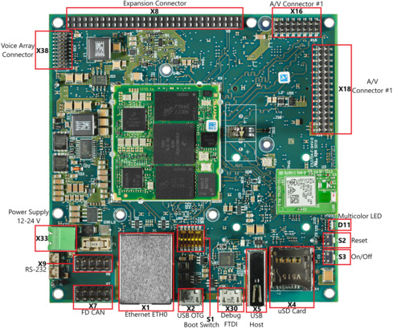 phyBOARD-Polis Components (top) |
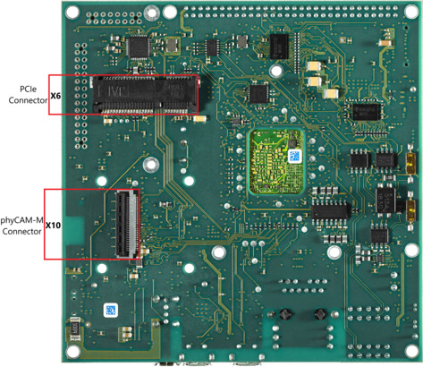 phyBOARD-Polis Components (bottom) |
{kind=link}
2. Getting Started
The phyCORE-i.MX8M Nano Kits are shipped with a pre-flashed SD-Card. It contains the phytec-headless-image and can be used directly as a boot source. The eMMC is programmed with only a U-boot as default. You can get all the sources from our download server. This chapter explains how to flash a BSP image to SD Card and how to start the board.
2.1. Get the Image
The *.sdcard image contains all BSP files in several, correctly pre-formatted partitions and can be copied to the SD card easily using the single Linux command dd. It can be built by Yocto or downloaded from our download server.
Get the *.sdcard file from our download server:
host$ wget https://download.phytec.de/Software/Linux/BSP-Yocto-i.MX8MM/BSP-Yocto-NXP-i.MX8MM-PD22.1.0/images/ampliphy-vendor/phyboard-polis-imx8mn-1/phytec-headless-image-phyboard-polis-imx8mn-1.sdcard
2.2. Write the Image to SD Card
Warning
To create your bootable SD card with the dd command, you must have root privileges. Because of this, you must be very careful when selecting the destination device for the dd command! All files on the selected destination device will be erased immediately without any further query! Consequently, having selected the wrong device can also erase your hard drive!
To create your bootable SD card, you must first find out the correct device name of your SD card and possible partitions. Then unmount the partitions before you start copying the image to the SD card.
In order to get the correct device name, first remove your SD card and execute ls /dev.
Now insert your SD card and execute ls /dev again.
Compare the two outputs to find the new device name(s) listed in the second output. These are the device names of the SD card (device and partitions if the SD card is formatted).
In order to verify the device names found, execute the command dmesg. Within the last lines of its output, you should also find the device names, for example, sde (depending on your system).
Now that you have the device name /dev/<your_device> (e.g. /dev/sde), you can see the partitions which must be unmounted if the SD card is formatted. In this case, you will also find /dev/<your_device> with an appended number (e.g. /dev/sde1) in the output. These represent the partition(s) that need to be unmounted.
Unmount all partitions:
host$ umount /dev/<your_device><number>
After having unmounted all devices with an appended number (<your_device><number>), you can create your bootable SD card:
host$ sudo dd if=<IMAGENAME>-<MACHINE>.sdcard of=/dev/<your_device> bs=1M conv=fsync status=progress
Using the device name (<your_device>) without appended number (e.g. sde) which stands for the whole device. The parameter conv=fsync forces a sync operation on the device before dd returns. This ensures that all blocks are written to the SD card and are not still in memory. The parameter status=progress will print out information on how much data is and still has to be copied until it is finished.
Note
The created file phytec-headless-image-phyboard-polis-imx8mn-2.sdcard is only a link to a file like phytec-headless-image-phyboard-polis-imx8mn-2-<BUILD-TIME>.rootfs.sdcard.
<BUILD-TIME> has the format: YYYYMMDDHHMMSS
example:
Date = 14.01.2022
Time = 10:42:11
<BUILD-TIME> = 20220114104211
2.3. First Start-up
To boot from an SD card, bootmode switch (S1) needs to be set to the following position:
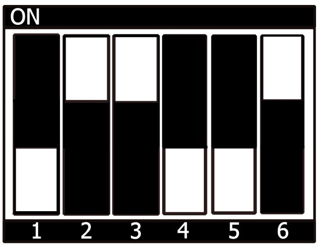 SD Card Boot |
{kind=link}
Insert the SD card
Connect the target and the host with mirco USB on (X30) debug USB
Power up the board
3. Building the BSP
This section will guide you through the general build process of the i.MX 8M Plus BSP using Yocto and the phyLinux script. For more information about our meta-layer or Yocto in general visit: L-813e.A13 Yocto Reference Manual (kirkstone).
3.1. Basic Set-Up
If you have never created a Phytec BSP with Yocto on your computer, you should take a closer look at the chapter BSP Workspace Installation in the L-813e.A13 Yocto Reference Manual (kirkstone).
3.2. Get the BSP
There are two ways to get the BSP sources. You can download the complete BSP sources from our download page: BSP-Yocto-IMX8MM; or you can build it yourself with Yocto. This is particularly useful if you want to make customizations.
The phyLinux script is a basic management tool for PHYTEC Yocto BSP releases written in Python. It is mainly a helper to get started with the BSP structure.
Create a fresh project folder, get phyLinux, and make the script executable:
host$ mkdir ~/yocto
host$ cd yocto/
host$ wget https://download.phytec.de/Software/Linux/Yocto/Tools/phyLinux
host$ chmod +x phyLinux
Warning
A clean folder is important because phyLinux will clean its working directory. Calling phyLinux from a directory that isn’t empty will result in a warning.
Run phyLinux
host$ ./phyLinux init
Note
On the first initialization, the phyLinux script will ask you to install the Repo tool in your /usr/local/bin directory.
During the execution of the init command, you need to choose your processor platform (SoC), PHYTEC’s BSP release number, and the hardware you are working on.
Note
If you cannot identify your board with the information given in the selector, have a look at the invoice for the product. And have look at our bsp.
It is also possible to pass this information directly using command line parameters:
host$ DISTRO=ampliphy-vendor MACHINE=phyboard-polis-imx8mn-2 ./phyLinux init -p imx8mn -r BSP-Yocto-NXP-i.MX8MM-PD22.1.1
After the execution of the init command, phyLinux will print a few important notes as well as information for the next steps in the build process.
3.2.1. Starting the Build Process
Set up the shell environment variables:
host$ source sources/poky/oe-init-build-env
Note
This needs to be done every time you open a new shell for starting builds.
The current working directory of the shell should change to build/.
Open the main configuration file and accept the GPU and VPU binary license agreements. You have to uncomment the corresponding line.
host$ vim conf/local.conf
# Uncomment to accept NXP EULA
# EULA can be found under ../sources/meta-freescale/EULA
ACCEPT_FSL_EULA = "1"
Build your image:
host$ bitbake phytec-headless-image
Note
We suggest starting with our smaller non-graphical image phytec-headless-image to see if everything is working correctly. The first compile process takes about 40 minutes on a modern Intel Core i7. All subsequent builds will use the filled caches and should take about 3 minutes.
3.2.2. BSP Images
All images generated by Bitbake are deployed to ~/yocto_imx8mn/build/deploy/images/<machine>. The following list shows for example all files generated for the i.MX 8M Nano phyboard-polis-imx8mn-2 machine:
u-boot.bin: Binary compiled U-boot bootloader (U-Boot). Not the final Bootloader image!
oftree: Default kernel device tree
u-boot-spl.bin: Secondary program loader (SPL)
bl31-imx8mm.bin: ARM Trusted Firmware binary
lpddr4_pmu_train_2d_dmem_202006.bin, lpddr4_pmu_train_2d_imem_202006.bin: DDR PHY firmware images
imx-boot: Bootloader build by imx-mkimage which includes SPL, U-Boot, ARM Trusted Firmware and DDR firmware. This is the final bootloader image which is bootable.
Image: Linux kernel image
Image.config: Kernel configuration
imx8mn-phyboard-polis-rdk*.dtb: Kernel device tree file
imx8mn-phy*.dtbo: Kernel device tree overlay files
phytec-headless-image*.tar.gz: Root file system
phytec-headless-image*.sdcard: SD card image
4. Installing the OS
4.1. Bootmode Switch (S1)
Tip
Hardware revision baseboard: 1552.1
The phyBOARD-Polis features a boot switch with six individually switchable ports to select the phyCORE-i.MX 8M Nano default bootsource.
Hardware revision baseboard: 1532.2

Default Boot (eMMC Boot) |
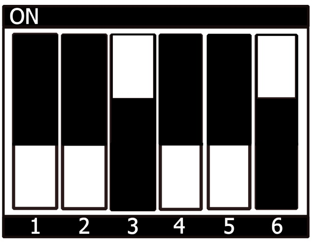 Serial Downloader Boot |
SD Card Boot |
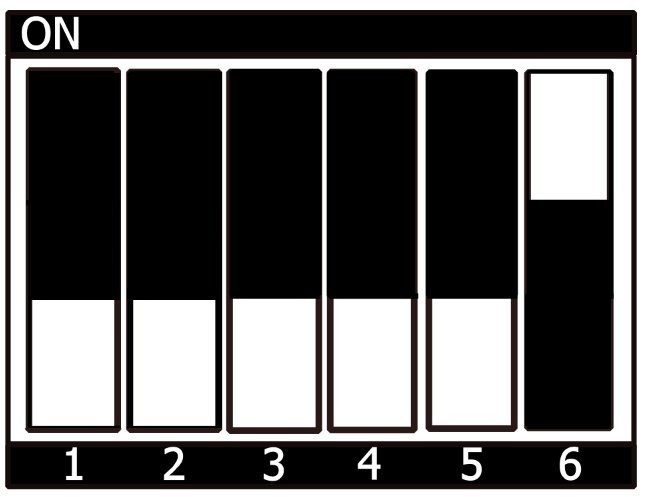 Fuse Boot |
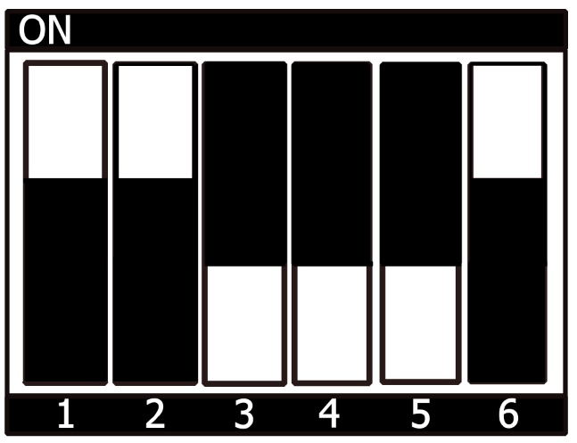 QSPI Boot |
{kind=link}
{kind=link}
{kind=link}
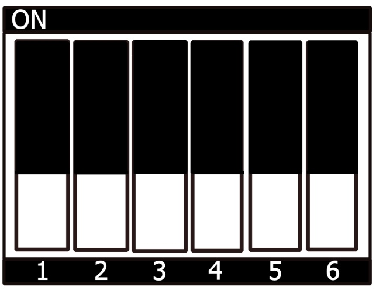 USB HOST |
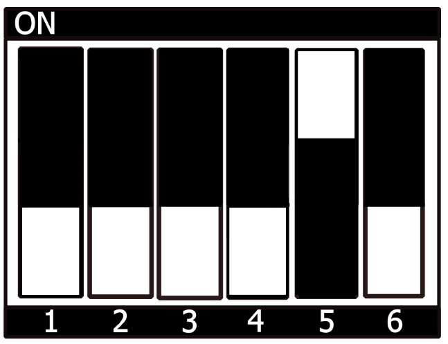 USB OTG |
{kind=link}
{kind=link}

UART1 RS485 |
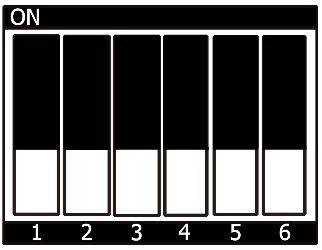 UART1 RS232 |
{kind=link}
4.2. Flash eMMC
To boot from eMMC, make sure that the BSP image is flashed correctly to the eMMC and the bootmode switch (S1) is set to Default SOM boot.
Warning
When eMMC and SD card are flashed with the same (identical) image, the UUIDs of the boot partitions are also identical. If the SD card is connected when booting, this leads to non-deterministic behavior as Linux mounts the boot partition based on UUID.
target:~# blkid
can be run to inspect whether the current setup is affected. If mmcblk2p1
and mmcblk1p1 have an identical UUID, the setup is affected.
4.2.1. Flash eMMC from Network
i.MX 8M Nano boards have an Ethernet connector and can be updated over a network. Be sure to set up the development host correctly. The IP needs to be set to 192.168.3.10, the netmask to 255.255.255.0, and a TFTP server needs to be available. From a high-level point of view, an eMMC device is like an SD card. Therefore, it is possible to flash the SD card image (<name>.sdcard) from the Yocto build system directly to the eMMC. The SD card image contains the bootloader, kernel, device tree, device tree overlays, and root file system.
4.2.1.1. Flash eMMC from Network in u-boot on Target
These steps will show how to update the eMMC via a network. However, they only work if the size of the image file is less than 1GB. If the image file is larger, go to the section Format SD Card. Configure the bootmode switch (S1) to boot from SD Card and put in an SD card. Power on the board and stop in U-Boot prompt.
Tip
A working network is necessary! Setup Network Host
Load your image via network to RAM:
u-boot=> tftp ${loadaddr} phytec-headless-image-phyboard-polis-imx8mn-2.sdcard
Using ethernet@30be0000 device
TFTP from server 192.168.3.10; our IP address is 192.168.3.11
Filename 'phytec-headless-image-phyboard-polis-imx8mn-2.sdcard'.
Load address: 0x40480000
Loading: #################################################################
#################################################################
#################################################################
...
...
...
#################################################################
#############
11.2 MiB/s
done
Bytes transferred = 911842304 (36599c00 hex)
Write the image to the eMMC:
u-boot=> mmc dev 2
switch to partitions #0, OK
mmc2(part 0) is current device
u-boot=> setexpr nblk ${filesize} / 0x200
u-boot=> mmc write ${loadaddr} 0x0 ${nblk}
MMC write: dev # 2, block # 0, count 1780942 ... 1780942 blocks written: OK
4.2.1.2. Flash eMMC via Network in Linux on Target
You can update the eMMC from your target.
Tip
A working network is necessary! Setup Network Host.
Take a compressed or uncompressed image on the host and send it with ssh through the network (then uncompress it, if necessary) to the eMMC of the target with a one-line command:
target$ ssh <USER>@192.168.3.10 "dd if=<path_to_file>/phytec-headless-image-phyboard-polis-imx8mn-2.sdcard" | dd of=/dev/mmcblk2
4.2.1.3. Flash eMMC via Network in Linux on Host
It is also possible to install the OS at eMMC from your Linux host. As before, you need a complete image on your host.
Tip
A working network is necessary! Setup Network Host.
Show your available image files on the host:
host$ ls phytec-headless-image-phyboard-polis-imx8mn-2.sdcard
Send the image with the command dd command combined with ssh through the network to the eMMC of your device:
host$ dd if=phytec-headless-image-phyboard-polis-imx8mn-2.sdcard status=progress | ssh root@192.168.3.11 "dd of=/dev/mmcblk2"
4.2.2. Flash eMMC u-boot image via Network from running u-boot
Update the standalone u-boot image imx-boot is also possible from u-boot. This can be used if the bootloader on eMMC is located in the eMMC user area.
Tip
A working network is necessary! Setup Network Host.
Load image over tftp into RAM and then write it to eMMC:
u-boot=> tftp ${loadaddr} imx-boot
u-boot=> mmc dev 2
u-boot=> mmc write ${loadaddr} 0x40 ${filesize}
4.2.3. Flash eMMC from USB
4.2.3.1. Flash eMMC from USB in u-boot on Target
Tip
This step only works if the size of the image file is less than 1GB due to limited usage of RAM size in Bootloader after enabling the OPTEE.
These steps will show how to update the eMMC via a USB device. Configure the bootmode switch to bootmode switch (S1) and put in an SD card. Power on the board and stop in u-boot prompt. Insert a USB device with the copied *.sdcard image to the USB slot.
Load your image from the USB device to RAM:
u-boot=> usb start
starting USB...
USB0: USB EHCI 1.00
scanning bus 0 for devices... 2 USB Device(s) found
scanning usb for storage devices... 1 Storage Device(s) found
u-boot=> fatload usb 0:1 ${loadaddr} \*.sdcard
497444864 bytes read in 31577 ms (15 MiB/s)
Write the image to the eMMC:
u-boot=> mmc dev 2
switch to partitions #0, OK
mmc2(part 0) is current device
u-boot=> setexpr nblk ${filesize} / 0x200
u-boot=> mmc write ${loadaddr} 0x0 ${nblk}
MMC write: dev # 2, block # 0, count 1024000 ... 1024000 blocks written: OK
u-boot=> boot
4.2.3.2. Flash eMMC from USB in Linux
These steps will show how to flash the eMMC on Linux with a USB stick. You only need a complete image saved on the USB stick and a bootable sdcard. (e.g. phytec-headless-image-phyboard-polis-imx8mn-2.sdcard). Set the bootmode switch to bootmode switch (S1).
Insert and mount the USB stick:
[ 60.458908] usb-storage 1-1.1:1.0: USB Mass Storage device detected
[ 60.467286] scsi host0: usb-storage 1-1.1:1.0
[ 61.504607] scsi 0:0:0:0: Direct-Access 8.07 PQ: 0 ANSI: 2
[ 61.515283] sd 0:0:0:0: [sda] 3782656 512-byte logical blocks: (1.94 GB/1.80 GiB)
[ 61.523285] sd 0:0:0:0: [sda] Write Protect is off
[ 61.528509] sd 0:0:0:0: [sda] No Caching mode page found
[ 61.533889] sd 0:0:0:0: [sda] Assuming drive cache: write through
[ 61.665969] sda: sda1
[ 61.672284] sd 0:0:0:0: [sda] Attached SCSI removable disk
target$ mount /dev/sda1 /mnt
Now show your saved image files on the USB Stick:
target$ cd /mnt target$ ls phytec-headless-image-phyboard-polis-imx8mn-2.sdcard
Show list of available MMC devices:
target$ ls /dev \| grep mmc
mmcblk1
mmcblk1p1
mmcblk1p2
mmcblk2
mmcblk2boot0
mmcblk2boot1
mmcblk2p1
mmcblk2p2
mmcblk2rpmb
The eMMC device can be recognized by the fact that it contains two boot partitions: (mmcblk2boot0; mmcblk2boot1)
Write the image to the phyCORE-i.MX 8M Nano eMMC (MMC device 2 without partition):
target$ dd if=phytec-headless-image-phyboard-polis-imx8mn-2.sdcard of=/dev/mmcblk2
After a complete write, your board can boot from eMMC.
Warning
Before this will work, you need to configure the multi-port switch to Default SOM Boot to bootmode switch (S1).
4.2.4. Flash eMMC from SD Card
Even if there is no network available, you can update the eMMC. For that, you only need a ready-to-use image file (*.sdcard) located on the SD card. Because the image file is quite large, you have to enlarge your SD card to use its full space (if it was not enlarged before). To enlarge your SD card, see Resizing ext4 Root Filesystem.
4.2.4.1. Flash eMMC from SD card in u-boot on Target
Tip
This step only works if the size of the image file is less than 1GB due to limited usage of RAM size in Bootloader after enabling the OPTEE. If the image file is too large use the Updating eMMC from SD card in Linux on Target subsection.
Flash an SD card with a working image and create a third FAT partition. Copy the *.sdcard image (for example phytec-headless-image.sdcard) to this partition.
Configure the bootmode switch to boot from the SD Card and insert the SD card.
Power on the board and stop in u-boot.
Flash your <YOUR_IMAGE>.sdcard image (for example phytec-headless-image.sdcard) from the SD card to eMMC. This will partition the card and copy imx-boot, Image, dtb, dtbo, and root file system to eMMC.
Load the image:
u-boot=> fatload mmc 1:3 ${loadaddr} phytec-headless-image-phyboard-polis-imx8mn-2.sdcard
reading
911842304 bytes read in 39253 ms (22.2 MiB/s)
Switch the mmc dev:
u-boot=> mmc list
FSL_SDHC: 1 (SD)
FSL_SDHC: 2 (eMMC)
u-boot=> mmc dev 2
switch to partitions #0, OK
mmc0(part 0) is current device
u-boot=> setexpr nblk ${filesize} / 0x200
u-boot=> mmc write ${loadaddr} 0x0 ${nblk}
MMC write: dev # 2, block # 0, count 1780942 ... 1780942 blocks written: OK
Power off the board and change the multi-port switch to Default SOM Boot to boot from eMMC.
4.2.4.2. Flash eMMC from SD card in Linux on Target
You can also flash the eMMC on Linux. You only need a complete image saved on the SD card (e.g. phytec-headless-image-phyboard-polis-imx8mn-2.sdcard).
Show your saved image files on the SD card:
target$ ls phytec-headless-image-phyboard-polis-imx8mn-2.sdcard
Show list of available MMC devices:
target$ ls /dev \| grep mmc
mmcblk1
mmcblk1p1
mmcblk1p2
mmcblk2
mmcblk2boot0
mmcblk2boot1
mmcblk2p1
mmcblk2p2
mmcblk2rpmb
The eMMC device can be recognized by the fact that it contains two boot partitions: (mmcblk2boot0; mmcblk2boot1)
Write the image to the phyCORE-i.MX 8M Nano eMMC (MMC device 2 without partition):
target$ dd if=phytec-headless-image-phyboard-polis-imx8mn-2.sdcard of=/dev/mmcblk2
After a complete write, your board can boot from eMMC.
Warning
Before this will work, you need to configure the bootmode switch (S1) to Default SOM Boot to boot from eMMC.
4.3. Flash SPI NOR Flash
The phyCORE-i.MX8MM modules are optionally equipped with SPI NOR Flash. To boot from SPI Flash, set bootmode switch (S1) to QSPI boot to boot from QSPI. The SPI Flash is usually quite small. The phyBOARD-Pollux-i.MX8MP kit only has 32MB SPI NOR flash populated. Only the bootloader and the environment can be stored. The kernel, device tree, and file system are taken from eMMC by default.
The SPI NOR flash partition table is defined in the U-Boot environment. It can be printed with:
u-boot=> printenv mtdparts
mtdparts=30bb0000.spi:3840k(u-boot),128k(env),128k(env:redund),-(none)
4.3.1. Flash SPI NOR Flash from Network
The SPI NOR can contain the bootloader and environment to boot from. The arm64 kernel can not decompress itself, the image size extends the SPI NOR flash populated on the phyCORE-i.MX 8M Nano.
Tip
A working network is necessary! Setup Network Host.
4.3.1.1. Flash SPI NOR from Network in u-boot on Target
Similar to updating the eMMC over a network, be sure to set up the development host correctly. The IP needs to be set to 192.168.3.10, the netmask to 255.255.255.0, and a TFTP server needs to be available. Before reading and writing is possible, the SPI-NOR flash needs to be probed:
u-boot=> sf probe
SF: Detected mt25qu512a with page size 256 Bytes, erase size 64 KiB, total 64 MiB
A specially formatted u-boot image for the SPI NOR flash is used. Ensure you use the correct image file. Load the image over tftp, erase and write the bootloader to the flash:
u-boot=> tftp ${loadaddr} imx-boot-phyboard-polis-imx8mn-2-fspi.bin-flash_evk_flexspi u-boot=> sf erase 0 0x400000 SF: 4194304 bytes @ 0x0 Erased: OK u-boot=> sf write ${loadaddr} 0 0x400000 u-boot=> sf write ${loadaddr} 0x400000 SF: 4194304 bytes @ 0x0 Written: OK
Erase the environment partition as well. This way, the environment can be written after booting from SPI NOR flash:
u-boot=> sf erase 0x400000 0x100000
Warning
Erasing the complete SPI NOR flash when it is fully written will take quite some time. This can trigger the watchdog to reset. Due to this, erase the full flash in Linux.
4.3.1.2. Flash SPI NOR from Network in kernel on Target
Copy the image from the host to the target:
host$ scp imx-boot-phyboard-polis-imx8mn-2-fspi.bin-flash_evk_flexspi root@192.168.3.11:/root
Find the number of erase blocks of the U-boot partition:
target$ mtdinfo /dev/mtd0
mtd0
Name: u-boot
Type: nor
Eraseblock size: 65536 bytes, 64.0 KiB
Amount of eraseblocks: 60 (3932160 bytes, 3.7 MiB)
Minimum input/output unit size: 1 byte
Sub-page size: 1 byte
Character device major/minor: 90:0
Bad blocks are allowed: false
Device is writable: true
Erase the u-boot partition and flash it:
target$ flash_erase /dev/mtd0 0x0 60 target$ flashcp imx-boot-phyboard-polis-imx8mn-2-fspi.bin-flash_evk_flexspi /dev/mtd0
4.3.2. Flash SPI NOR Flash from SD Card
The bootloader on SPI NOR flash can be also flashed with SD Card.
4.3.2.1. Flash SPI NOR from SD Card in u-boot on Target
Copy the SPI NOR flash U-boot image imx-boot-phyboard-polis-imx8mn-2-fspi.bin-flash_evk_flexspi to the FAT partition on the SD Card. Before reading and writing are possible, the SPI-NOR flash needs to be probed:
u-boot=> sf probe
SF: Detected n25q256ax1 with page size 256 Bytes, erase size 64 KiB, total 32 MiB
A specially formatted U-boot image for the SPI NOR flash is used. Ensure you use the correct image file. Load the image from the SD Card, erase and write the bootloader to the flash:
u-boot=> mmc dev 1
u-boot=> fatload mmc 1:1 ${loadaddr} imx-boot-phyboard-polis-imx8mn-2-fspi.bin-flash_evk_flexspi
u-boot=> sf erase 0 0x400000
u-boot=> sf write ${loadaddr} 0 0x400000
Erase the environment partition as well. This way, the environment can be written after booting from SPI NOR flash:
u-boot=> sf erase 0x400000 0x100000
Warning
Erasing the complete SPI NOR flash when it is fully written will take quite some time. This can trigger the watchdog to reset. Due to this, erase the full flash in Linux.
4.3.2.2. Flash SPI NOR from SD Card in kernel on Target
Mount the SD Card:
host$ mount /dev/mmcblkp1 /mnt
Find the number of erase blocks of the u-boot partition:
target$ mtdinfo /dev/mtd0
mtd0
Name: u-boot
Type: nor
Eraseblock size: 65536 bytes, 64.0 KiB
Amount of eraseblocks: 60 (3932160 bytes, 3.7 MiB)
Minimum input/output unit size: 1 byte
Sub-page size: 1 byte
Character device major/minor: 90:0
Bad blocks are allowed: false
Device is writable: true
Erase the u-boot partition and flash it:
target$ flash_erase /dev/mtd0 0x0 60 target$ flashcp /mnt/imx-boot-phyboard-polis-imx8mn-2-fspi.bin-flash_evk_flexspi /dev/mtd0
4.4. RAUC
The RAUC (Robust Auto-Update Controller) mechanism support has been added to meta-ampliphy. It controls the procedure of updating a device with new firmware. This includes updating the Linux kernel, Device Tree, and root filesystem. PHYTEC has written an online manual on how we have intergraded RAUC into our BSPs: L-1006e.A3 RAUC Update & Device Management Manual.
5. Development
5.1. Booting the Kernel from a Network
Booting from a network means loading the kernel over TFTP and the root file system over NFS. The bootloader itself must already be loaded from another boot device that is available.
5.1.1. Host Preparation
On the development host, a TFTP server must be installed and configured. The following tools will be needed to boot the Kernel from Ethernet:
A TFTP server
For Ubuntu, install:
host$ sudo apt-get install tftpd-hpa xinetd
After the installation, there are two ways to configure the TFTP server.
5.1.2. TFTP Server Setup
As a stand-alone daemon
Controlled and handled by xinetd
First, create a directory to store the TFTP files:
host$ sudo mkdir /tftpboot
host$ sudo chmod -R 777 /tftpboot
host$ sudo chown -R nobody /tftpboot
Then copy your BSP image files to this directory. You also need to configure a static IP address for the appropriate interface. The default IP address of the PHYTEC evaluation boards is 192.168.3.11. Setting a host address 192.168.3.10 with netmask 255.255.255.0 is a good choice.
host$ ifconfig eth1
You will receive:
eth1 Link encap:Ethernet HWadr 00:11:6b:98:e3:47
inet addr:192.168.3.10 Bcast:192.168.3.255 Mask:255.255.255.0
5.1.2.1. TFTP as a Stand-alone Daemon
Create or edit /etc/default/tftpd-hpa:
# /etc/default/tftpd-hpa
TFTP_USERNAME="tftp"
TFTP_DIRECTORY="/tftpboot"
TFTP_ADDRESS=":69"
TFTP_OPTIONS="-s -c"
Set TFTP_DIRECTORY to your TFTP server root directory
Set TFTP_ADDRESS to the host address the server is listening to (set to 0.0.0.0:69 to listen to all local IPs)
Set TFTP_OPTIONS, the following command shows the available options:
host$ man tftpd
Restart the services to pick up the configuration changes:
host$ sudo service tftpd-hpa restart
Now connect the ethernet port of the board to your host system, configure the board to network boot, and start it.
Usually, TFTP servers fetch files from the /tftpboot directory. If you built your own images, please copy them from the BSP’s build directory to the /tftpboot directory. We also need a network connection between the embedded board and the TFTP server. The server should be set to IP 192.168.3.10 and netmask 255.255.255.0.
5.1.2.2. NFS Server Setup
After the installation of the TFTP server, an NFS server needs to be installed, too.
host$ sudo apt-get install nfs-kernel-server
The NFS server is not restricted to a certain file system location, so all we have to do on most distributions is modify the file /etc/exports and export our root file system to the embedded network. In this example file, the whole directory is exported and the “lab network” address of the development host is 192.168.3.10. The IP address has to be adapted to the local needs:
/home/<user>/<rootfspath> 192.168.3.11/255.255.255.0(rw,no_root_squash,sync,no_subtree_check)
<user> must be replaced with your home directory name. <rootfspath> can be set to a folder that contains a rootfs tar.gz image extracted with sudo.
Now the NFS-Server has to read the /etc/exportfs file again:
host$ sudo exportfs -ra
5.1.3. Place Images on Host for Netboot
Copy the kernel image to your tftpboot directory:
cp Image /tftpboot
Copy the devicetree to your tftpboot directory:
cp oftree /tftpboot
Extract the rootfs to your nfsroot:
sudo tar -xvzf phytec-headless-image-phyboard-polis-imx8mn-2.tar.gz -C <path_to_your_NFSROOT>
Note
Check the destination path when unpacking the rootfs.
5.1.4. Network Settings on Target
To customize the targets ethernet configuration, please follow the description here: Network Environment Customization
5.1.5. Booting from an Embedded Board
Boot the board into the U-boot prompt and press any key to hold.
To boot from a network, call:
u-boot=> run netboot
5.2. Working with UUU-Tool
The Universal Update Utility Tool (UUU-Tool) from NXP is software to execute from the host to load and run the bootloader on the board through SDP. For detailed information visit https://github.com/NXPmicro/mfgtools or download the Official UUU-tool documentation.
5.2.1. Host preparations for UUU-Tool Usage
host$ sudo apt-get install libusb-1.0-0-dev libzstd-dev libzip-dev libbz2-dev pkg-config cmake
host$ git clone https://github.com/NXPmicro/mfgtools.git
host$ cd mfgtools
host$ cmake .
host$ make
5.2.2. Get _flash.bin
Download imx-boot from our server or get it from your Yocto build directory at ../build/deploy/images/phyboard-polis-imx8mn-2/ and copy the U-boot image (imx-boot) to the UUU directory:
host$ cd mfgtools
host$ cp -v imx-boot uuu/_flash.bin
5.2.3. Prepare Target
For UUU boot, set the bootmode switch (S1) to Serial downloader (USB boot) (Boot Configuration Options). Also, connect USB OTG X2 to your host.
5.2.4. Starting bootloader via UUU-Tool
Execute and Power up the board:
host$ cd mfgtools/uuu
host$ sudo ./uuu _flash.bin
You can see the bootlog on the console via the debug USB (X30), as usual.
Note
The default boot command when booting with UUU-Tool is set to fastboot. If you want to change this, please adjust the environment variable bootcmd_mfg in U-boot prompt with setenv bootcmd_mfg. Please note, when booting with UUU-tool the default environment is loaded. Saveenv has no effect. If you want to change the boot command permanently for UUU-boot, you need to change this in U-boot code.
5.2.5. Flashing U-boot Image to eMMC via UUU-Tool
Set the bootmode switch (S1) to Serial downloader (USB boot) (Boot Configuration Options). Also, connect USB OTG X2 to your host.
Download the imx-boot image from our server or get them from your Yocto build directory at ../build/deploy/images/phyboard-polis-imx8mn-2/ and copy them to the UUU directory:
host$ cd mfgtools
host$ cp -v imx-boot uuu/_flash.bin
Execute and power up the board:
host$ cd mfgtools/uuu
host$ sudo ./uuu -b emmc_burn_loader.lst _flash.bin
5.2.6. Flashing wic Image to eMMC via UUU-Tool
Set the bootmode switch (S1) to Serial downloader (USB boot) (Boot Configuration Options). Also, connect USB OTG X2 to your host.
Download phytec-headless-image-phyboard-polis-imx8mn-2.wic and imx-boot image from our server or get them from your Yocto build directory at ../build/deploy/images/phyboard-polis-imx8mn-2/ and copy them to the UUU directory:
host$ cd mfgtools host$ cp -v imx-boot uuu/_flash.bin host$ cp -v phytec-headless-image-phyboard-polis-imx8mn-2.wic uuu/_rootfs.wic
Execute and power up the board:
host$ cd mfgtools/uuu
host$ sudo ./uuu -b emmc_burn_loader.lst _flash.bin _rootfs.wic
5.3. Standalone Build
In this section, we describe how to build the U-Boot and the Linux kernel without using the Yocto Project. This procedure makes the most sense for development. The U-Boot source code, the Linux kernel, and all other git repositories are available on our Git server at git://git.phytec.de.
Note
Should your company firewall/gateway inhibit the git protocol, you may use HTTP or HTTPS instead (e.g. git clone https://git.phytec.de/u-boot-imx)
5.3.1. Git Repositories
Used U-Boot repository:
git://git.phytec.de/u-boot-imx
Our U-Boot is based on the u-boot-imx and adds board-specific patches.
Used Linux kernel repository:
git://git.phytec.de/linux-imx
Our i.MX 8M Nano kernel is based on the linux-imx kernel. To find out which tag is used for a specific board, have a look at your BSP source folder:
meta-phytec/dynamic-layers/freescale-layer/recipes-kernel/linux/linux-imx_*.bb
meta-phytec/recipes-bsp/u-boot/u-boot-imx_*.bb
5.3.2. Get the SDK
You can download the SDK here, or build it yourself with Yocto:
Move to the Yocto build directory:
host$ source sources/poky/oe-init-build-env host$ bitbake -c populate_sdk phytec-headless-image # or another image
5.3.3. Install the SDK
Set correct permissions and install the SDK:
host$ chmod +x phytec-ampliphy-vendor-glibc-x86_64-phytec-headless-image-cortexa53-crypto-toolchain-BSP-Yocto-NXP-i.MX8MM-PD22.1.1.sh host$ ./phytec-ampliphy-vendor-glibc-x86_64-phytec-headless-image-cortexa53-crypto-toolchain-BSP-Yocto-NXP-i.MX8MM-PD22.1.1.sh ============================================================================================================ Enter target directory for SDK (default: /opt/ampliphy-vendor/BSP-Yocto-NXP-i.MX8MM-PD22.1.1): You are about to install the SDK to "/opt/ampliphy-vendor/BSP-Yocto-NXP-i.MX8MM-PD22.1.1". Proceed [Y/n]? Extracting SDK...done Setting it up...done SDK has been successfully set up and is ready to be used.
5.3.4. Using the SDK
Activate the toolchain for your shell by sourcing the file environment-setup in the toolchain directory:
host$ source /opt/ampliphy-vendor/BSP-Yocto-NXP-i.MX8MM-PD22.1.1/environment-setup-cortexa53-crypto-phytec-linux
5.3.5. Build imx-boot
With U-Boot version v2021.04, the mkimage tool from NXP is finally integrated. This means that you can create the imx-boot without manually using the imx mkimage tool.
5.3.5.1. Get the needed binaries
To build the imx-boot, you need to copy these files to your u-boot-imx build directory and rename them to fit with mkimage tool script:
ARM Trusted firmware binary (mkimage tool compatible format bl31.bin): bl31-imx8mn.bin
DDR firmware files (mkimage tool compatible format lpddr4_pmu_train_*d_*mem.bin): lpddr4_pmu_train_2d_dmem.bin, lpddr4_pmu_train_2d_imem*.bin, (lpddr4_pmu_train_1d_dmem*.bin, lpddr4_pmu_train_1d_imem*.bin)*
If you already build our BSP with Yocto, you can get the bl31-imx8mn.bin and lpddr4_pmu_train*.bin from the directory mentioned here: BSP Images
Or you can download the files here: https://download.phytec.de/Software/Linux/BSP-Yocto-i.MX8MM/BSP-Yocto-NXP-i.MX8MM-PD22.1.0/images/ampliphy-vendor/phyboard-polis-imx8mn-1/imx-boot-tools/
Warning
Make sure you rename the files you need so that they are compatible with the mkimage tool.
5.3.5.2. Build U-Boot
Get the U-Boot sources:
host$ git clone git://git.phytec.de/u-boot-imx
To get the correct U-Boot tag you need to take a look at our release notes, which can be found here: release notes
The tag needed at this release is called v2021.04_2.2.0-phy5
Check out the needed U-Boot tag:
host$ cd ~/u-boot-imx/ host$ git fetch --all --tags host$ git checkout tags/v2021.04_2.2.0-phy5
Technically, you can now build the U-Boot, but practically there are some further steps necessary:
Create your own development branch:
host$ git checkout -b <new-branch>
Note
You can name your development branch as you like, this is just an example.
Copy all binaries into the U-Boot build directory
Set up a build environment
Set this environment variable before building the Image:
host$ export ATF_LOAD_ADDR=0x960000
build flash.bin (imx-boot):
host$ make phycore-imx8mn_defconfig host$ make flash.bin
The flash.bin can be found at u-boot-imx/ directory and now can be flashed. A chip-specific offset is needed. E.g. flash SD card:
host$ sudo dd if=flash.bin of=/dev/sd[x] bs=1024 seek=32 conv=sync
5.3.5.3. Build a U-Boot with a Fixed RAM Size
If you cannot boot your system anymore because the hardware introspection in the EEPROM is damaged or deleted, you can create a flash.bin with a fixed ram size. You should still contact support and flash the correct EEPROM data, as this could lead to unexpected behavior.
Follow the steps to get the U-boot sources and check the correct branch in the Build U-Boot section.
Choose the correct RAM size as populated on the board.
CONFIG_TARGET_PHYCORE_IMX8MN=y # CONFIG_PHYTEC_IMX8M_SOM_DETECTION is not set CONFIG_PHYCORE_IMX8MN_RAM_SIZE_FIX=y # CONFIG_PHYCORE_IMX8MN_RAM_SIZE_1GB=y # CONFIG_PHYCORE_IMX8MN_RAM_SIZE_2GB=y # CONFIG_PHYCORE_IMX8MN_RAM_SIZE_4GB=y
After saving the changes, follow the remaining steps from Build U-Boot.
5.3.6. Build Kernel
The used linux-imx branch can be found in the release notes
The tag needed for this release is called v5.10.72_2.2.0-phy9
Check out the needed linux-imx tag:
host$ git clone git://git.phytec.de/linux-imx host$ cd ~/linux-imx/ host$ git fetch --all --tags host$ git checkout tags/v5.10.72_2.2.0-phy9 host$ git checkout -b <new-branch>
Set up a build environment
Build the linux kernel:
host$ make imx_v8_defconfig imx8_phytec_distro.config imx8_phytec_platform.config
host$ make -j16
The Image can be found at ~/linux-imx/arch/arm64/boot/Image
The dtb can be found at ~/linux-imx/arch/arm64/boot/dts/freescale/imx8mn-phyboard-polis-rdk.dtb
Note
If you are facing the following build issue:
scripts/dtc/yamltree.c:9:10: fatal error: yaml.h: No such file or directory
Make sure you installed the package “libghc-libyaml-dev” on your host system:
sudo apt install libghc-libyaml-dev
5.4. Accessing the Development States between Releases
Special release manifests exist to give you access to the current development states of the Yocto BSP. They will not be displayed in the phyLinux selection menu but need to be selected manually. This can be done using the following command line:
host$ ./phyLinux init -p imx8mn -r BSP-Yocto-NXP-i.MX8MM-PD22.1.y
This will initialize a BSP that will track the latest development state. From now on repo sync in this folder will pull all the latest changes from our Git repositories:
host$ repo sync
5.5. Accessing Development State of Upcoming Major Release
We are already working on the next major release update based on NXP BSP rel_imx_5.15.52_2.1.0 (kirkstone). We are trying to update the public development state on a regular basis.
host$ ./phyLinux init -p imx8mn -r BSP-Yocto-NXP-i.MX8MM-PD23.1.y
5.6. Accessing the Latest Upstream Support
We have a vanilla manifest that makes use of the Yocto master branches (not an NXP release), Linux, and u-boot. This can be used to test the latest upstream kernel/u-boot.
Note
The master manifest reflects the latest state of development. This tends to be broken from time to time. We try to fix the master on a regular basis.
host$ ./phyLinux init -p imx8mn -r BSP-Yocto-Ampliphy-i.MX8MM-master-next
5.7. Format SD-Card
Most images are larger than the default root partition. To flash any storage device with SD Card, the rootfs needs to be expanded or a separate partition needs to be created. There are some different ways to format the SD Card. The easiest way to do this is to use the UI program Gparted.
5.7.1. Gparted
Get GParted:
host$ sudo apt install gparted
Insert the SD Card into your host and get the device name:
host$ dmesg | tail
...
[30436.175412] sd 4:0:0:0: [sdb] 62453760 512-byte logical blocks: (32.0 GB/29.8 GiB)
[30436.179846] sdb: sdb1 sdb2
...
Unmount all SD Card partitions.
Launch GParted:
host$ sudo gparted

5.7.1.1. Expand rootfs
Choose your SD Card device at the drop-down menu on the top right
Choose the ext4 root partition and click on resize:


Drag the slider as far as you like or enter the size manually.
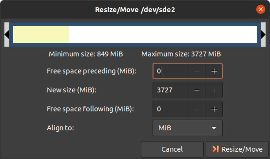
Confirm your entry by clicking on the “Change size” button.
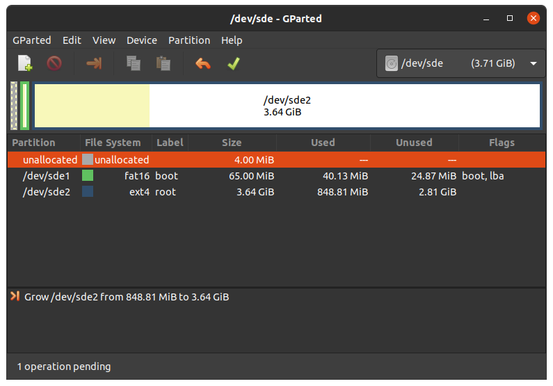
To apply your changes, press the green tick.
Now you can mount the root partition and copy e.g. the phytec-headless-image-phyboard-polis-imx8mn-2.wic image to it. Then unmount it again:
host$ sudo cp phytec-headless-image-phyboard-polis-imx8mn-2.wic /mnt/ ; sync host$ umount /mnt
5.7.1.2. Create the Third Partition
Choose your SD Card device at the drop-down menu on the top right
Choose the bigger unallocated area and press “New”:

Click “Add”

Confirm your changes by pressing the green tick.

Now you can mount the new partition and copy e.g. phytec-headless-image-phyboard-polis-imx8mn-2.wic image to it. Then unmount it again:
host$ sudo mount /dev/sde3 /mnt host$ sudo cp phytec-headless-image-phyboard-polis-imx8mn-2.wic /mnt/ ; sync host$ umount /mnt
6. Device Tree (DT)
6.1. Introduction
The following text briefly describes the Device Tree and can be found in the Linux kernel Documentation (https://docs.kernel.org/devicetree/usage-model.html)
“The “Open Firmware Device Tree”, or simply Devicetree (DT), is a data structure and language for describing hardware. More specifically, it is a description of hardware that is readable by an operating system so that the operating system doesn’t need to hard code details of the machine.”
The kernel documentation is a really good source for a DT introduction. An overview of the device tree data format can be found on the device tree usage page at devicetree.org.
6.2. PHYTEC i.MX 8M Nano BSP Device Tree Concept
The following sections explain some rules PHYTEC has defined on how to set up device trees for our i.MX 8M Nano SoC-based boards.
6.2.1. Device Tree Structure
Module.dtsi - Module includes all devices mounted on the SoM, such as PMIC and RAM.
Carrierboard.dtsi - Devices that come from the i.MX 8M Nano SoC but are just routed down to the carrier board and used there are included in this dtsi.
Board.dts - include the carrier board and module dtsi files. There may also be some hardware configuration nodes enabled on the carrier board or the module (i.e. the Board .dts shows the special characteristics of the board configuration). For example, there are phyCORE-i.MX 8M Nano SOMs which may or may not have a MIPI DSI to LVDS converter mounted. The converter is enabled (if available) in the Board .dts and not in the Module .dtsi
From the root directory of the Linux Kernel our devicetree files for i.MX 8 platforms can be found in arch/arm64/boot/dts/freescale/.
6.2.2. Device Tree Overlay
Device Tree overlays are device tree fragments that can be merged into a device tree during boot time. These are for example hardware descriptions of an expansion board. They are instead of being added to the device tree as an extra include, now applied as an overlay. They also may only contain setting the status of a node depending on if it is mounted or not. The device tree overlays are placed next to the other device tree files in our Linux kernel repository in the subfolder arch/arm64/boot/dts/freescale/overlays.
Available overlays for phyboard-polis-imx8mn-2.conf are:
imx8mn-phyboard-polis-peb-eval-01.dtbo
imx8mn-phyboard-polis-peb-av-010.dtbo
imx8mn-phycore-rpmsg.dtbo
imx8mn-phycore-no-eth.dtbo
imx8mn-phycore-no-spiflash.dtbo
imx8mn-vm016.dtbo
imx8mn-vm016-fpdlink.dtbo
imx8mn-vm017.dtbo
imx8mn-vm017-fpdlink.dtbo
imx8mn-dual-vm017-fpdlink.dtbo
If an overlay should be applied or not can be set during runtime and will have an effect after a reboot. The overlays are applied in the bootloader after the boot command is called and before the kernel is loaded. The next sections explain how it is done.
6.2.2.1. Set ${overlays} variable
The ${overlays} U-Boot environment variable contains a space-separated list
of overlays that will be applied during boot. Depending on the boot source the
overlays have to either be placed in the boot partition of eMMC/SD-Card or are
loaded over tftp. Overlays set in the $KERNEL_DEVICETREE Yocto machine variable
will be automatically added to the boot partition of the final SD Card image.
The ${overlays} variable can be either set directly in the U-Boot
environment. Or be a part of the external bootenv.txt environment. The
${overlays} variable loaded from the external environment will always
overwrite the value from the environment saved directly in the flash. On
default, the ${overlays} variable is not set directly in the U-Boot environment
but comes from the external bootenv.txt environment file. It is also located in
the boot partition of the sdcard image. You can read and write the file on
booted target:
target$ cat /boot/bootenv.txt overlays=imx8mn-phyboard-polis-rdk-peb-eval-01.dtbo imx8mn-phyboard-polis-rdk-peb-av-010.dtbo
Changes will then take effect after the next reboot. If no bootenv.txt file is available the overlays variable can be set directly in the U-Boot environment.
u-boot=> setenv overlays imx8mn-phyboard-polis-rdk-peb-av-010.dtbo u-boot=> printenv overlays overlays=imx8mn-phyboard-polis-rdk-peb-av-010.dtbo u-boot=> saveenv
If you want to change the overlay variable in a non-persistent way, for example for testing:
u-boot=> setenv no_bootenv 1
u-boot=> setenv overlays <overlays you like to test>
u-boot=> boot
Note
When the board is booted for the first time or when you reset the environment to the default (u-boot=> env default -a), the environment is automatically saved in flash, so the board must boot at least once until you can customize the environment in a non-persistent way.
More information about the external environment can be found in U-boot External Environment subsection of the device tree overlay section.
We use the ${overlays} variable for overlays describing expansion boards and cameras that can not be detected during run time. To prevent applying overlays listed in the ${overlays} variable during boot the ${no_overlays} variable can be set to 1 in the bootloader environment.
u-boot=> setenv no_overlays 1
u-boot=> saveenv
6.2.2.2. Extension Command
The u-boot extension command makes it possible to easily apply overlays that have been detected and added to a list by the board code callback extension_board_scan(). In the BSP, the overlays applied in this way are used to disable components that are not populated on the SoM. The detection is done with the EEPROM data (EEPROM SoM Detection) found on the SoM i2c EEPROM.
The detection is so far implemented for SPI-NOR flash and ethernet PHY. It depends on the SoM variant if any device tree overlays will be applied. To check if an overlay will be applied on the running SoM run:
u-boot=> extension scan Found 1 extension board(s). u-boot=> extension list Extension 0: phyCORE-i.MX8MM no SPI flash Manufacturer: PHYTEC Version: Devicetree overlay: imx8mn-phycore-no-spiflash.dtbo Other information: SPI flash not populated on SoM
If the EEPROM data is not available, no device tree overlays are applied and the default status “okay” is preserved. To prevent running the extension command during boot the ${no_extensions} variable can be set to 1 in the bootloader environment.
u-boot=> setenv no_extensions 1
u-boot=> saveenv
6.2.3. U-boot External Environment
During the start of the linux kernel the external text environment bootenv.txt text file will be loaded from the boot partition of an MMC device or from tftp. The main intention of this file is to store the ${overlays} variable. This makes it easy to pre-define the overlays in Yocto depending on the machine used. The content from the file is defined in the Yocto recipe bootenv found in meta-phytec: https://git.phytec.de/meta-phytec/tree/recipes-bsp/bootenv?h=hardknott
Other variables can be set in this file. They will overwrite the existing settings in the environment. But only variables evaluated after the boot command is issued can be overwritten such as ${nfsroot} or ${mmcargs}. Changing other variables in that file will not have an effect. See the usage during netboot as an example.
If the external environment can not be loaded the boot process will be anyway continued with the values of the existing environment settings.
6.2.4. Change U-boot Environment from Linux on Target
Libubootenv is a tool included in our images to modify the u-boot environment of Linux on the target machine.
Print the u-boot environment using the following command:
target$ fw_printenv
Modify a u-boot environment variable using the following command:
Modify a u-boot environment variable using the following command:
Caution
Libubootenv takes the environment selected in a configuration file. The environment to use is inserted there, and by default it is configured to use the EMMC environment (known as the default used environment).
If the EMMC is not flashed or the EMMC environment is deleted, libubootenv will not work. You should modify the /etc/fw_env.config file to match the environment source that you want to use.
7. Accessing Peripherals
To find out which boards and modules are supported by the release of PHYTEC’s phyCORE-i.MX 8M Nano BSP described herein, visit our bsp web page and click the corresponding BSP release in the download section. Here you can find all hardware supported in the columns “Hardware Article Number” and the correct machine name in the corresponding cell under “Machine Name”.
To achieve maximum software reuse, the Linux kernel offers a sophisticated infrastructure that layers software components into board-specific parts. The BSP tries to modularize the kit features as much as possible. When a customized baseboard or even a customer-specific module is developed, most of the software support can be re-used without error-prone copy-and-paste. The kernel code corresponding to the boards can be found in device trees (DT) under linux/arch/arm64/boot/dts/freescale/.dts.
In fact, software reuse is one of the most important features of the Linux kernel, especially of the ARM implementation which always has to fight with an insane number of possibilities of the System-on-Chip CPUs. The whole board-specific hardware is described in DTs and is not part of the kernel image itself. The hardware description is in its own separate binary, called the Device Tree Blob (DTB) (section device tree).
Please read section PHYTEC i.MX 8M Nano BSP Device Tree Concept to get an understanding of our i.MX 8 BSP device tree model.
The following sections provide an overview of the supported hardware components and their operating system drivers on the i.MX 8 platform. Further changes can be ported upon customer request.
7.1. i.MX 8M Nano Pin Muxing
The i.MX 8M Nano SoC contains many peripheral interfaces. In order to reduce package size and lower overall system cost while maintaining maximum functionality, many of the i.MX 8M Nano terminals can multiplex up to eight signal functions. Although there are many combinations of pin multiplexing that are possible, only a certain number of sets, called IO sets, are valid due to timing limitations. These valid IO sets were carefully chosen to provide many possible application scenarios for the user.
Please refer to our Hardware Manual or the NXP i.MX 8M Nano Reference Manual for more information about the specific pins and the muxing capabilities.
The IO set configuration, also called muxing, is done in the Device Tree. The driver pinctrl-single reads the DT’s node fsl,pins, and does the appropriate pin muxing.
The following is an example of the pin muxing of the UART1 device in imx8mn-phyboard-polis-rdk.dtsi:
pinctrl_uart1: uart1grp {
fsl,pins = <
MX8MM_IOMUXC_SAI2_RXFS_UART1_DCE_TX 0x00
MX8MM_IOMUXC_SAI2_RXC_UART1_DCE_RX 0x00
MX8MM_IOMUXC_SAI2_RXD0_UART1_DCE_RTS_B 0x00
MX8MM_IOMUXC_SAI2_TXFS_UART1_DCE_CTS_B 0x00
>;
};
The first part of the string MX8MM_IOMUXC_SAI2_RXFS_UART1_DCE_TX names the pad (in this example SAI2_RXFS). The second part of the string (UART1_DCE_RX) is the desired muxing option for this pad. The pad setting value (hex value on the right) defines different modes of the pad, for example, if internal pull resistors are activated or not. In this case, the internal resistors are disabled.
7.2. RS232/RS485
The i.MX 8M Nano SoC provides up to 4 UART units. PHYTEC boards support different numbers of these UART units. UART1 can also be used as RS-485. For this, bootmode switch (S1) needs to be set correctly:
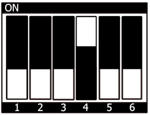 UART1 RS485 |

UART1 RS232 |
7.2.1. RS232
Display the current settings of a terminal in a human-readable format:
target$ stty -a
Configuration of the UART interface can be done with stty. For example
target$ stty -F /dev/ttymxc0 115200 crtscts raw -echo
With a simple echo and cat, basic communication can be tested. Example
target$ echo 123 > /dev/ttymxc0
host$ cat /dev/ttyUSB2
The host should print out “123”.
7.2.2. RS485
For easy testing, look at the linux-serial-test. This tool is called the IOCTL for RS485 and sends a constant stream of data.
target$ linux-serial-test -p /dev/ttymxc0 -b 115200 --rs485 0
More information about the linux-serial-test tool and its parameters can be found here: linux-serial-test
Documentation for calling the IOCTL within c-code is described in the Linux kernel documentation: https://www.kernel.org/doc/Documentation/serial/serial-rs485.txt
The device tree representation for RS232 and RS485: https://git.phytec.de/linux-imx/tree/arch/arm64/boot/dts/freescale/imx8mn-phyboard-polis.dtsi?h=v5.10.72_2.2.0-phy4#n171
7.3. Network
phyCORE-i.MX8MM provides two ethernet interfaces. A gigabit Ethernet is provided by our module and board.
Warning
The naming convention of the Ethernet interfaces in the hardware (ethernet0 and ethernet1) do not align with the network interfaces (eth0 and eth1) in Linux. So, be aware of these differences:
All interfaces offer a standard Linux network port that can be programmed using the BSD socket interface. The whole network configuration is handled by the systemd-networkd daemon. The relevant configuration files can be found on the target in /lib/systemd/network/ as well as the BSP in meta-yogurt/recipes-core/systemd/system-machine-units.
IP addresses can be configured within *.network files. The default IP address and netmask for eth0 is:
eth0: 192.168.3.11/24
The DT Ethernet setup might be split into two files depending on your hardware configuration: the module DT and the board-specific DT. The device tree set up for the FEC ethernet IP core where the ethernet PHY is populated on the SoM can be found here: https://git.phytec.de/linux-imx/tree/arch/arm64/boot/dts/freescale/imx8mn-phycore-som.dtsi?h=v5.10.72_2.2.0-phy4#n44.
7.3.1. Network Environment Customization
7.3.1.1. U-boot network-environment
To find the Ethernet settings in the target bootloader:
u-boot=> printenv ipaddr serverip netmask ethaddr netargs netboot
With your development host set to IP 192.168.3.10 and netmask 255.255.255.0, the target should return:
u-boot=> printenv ipaddr serverip netmask ethaddr netargs netboot
ipaddr=192.168.3.11
serverip=192.168.3.10
netmask=255.225.255.0
ethaddr=50:2d:f4:19:d3:38
netargs=setenv bootargs console=${console},${baudrate} root=/dev/nfs ip=${nfsip} nfsroot=${serverip}:${nfsroot},v3,tcp
netboot=echo Booting from net ...; if test ${ip_dyn} = yes; then setenv nfsip dhcp; setenv get_cmd dhcp; else setenv nfsip ${ipaddr}:${serverip}::${netmask}::eth0:on; setenv get_cmd tftp; fi; if run net_load_bootenv; then env import -t ${bootenv_addr} ${filesize};fi; run netargs; ${get_cmd} ${loadaddr} ${image}; if ${get_cmd} ${fdt_addr} ${fdt_file}; then run net_apply_overlays; booti ${loadaddr} - ${fdt_addr}; else echo WARN: Cannot load the DT; fi;
If you need to make any changes:
u-boot=> setenv <parameter> <value>
<parameter> should be one of ipaddr, netmask, gateway, or severip.
<value> will be the actual value of the chosen parameter.
Make your changes and hit ‘Enter’.
The changes you made are temporary for now. To save these:
u-boot=> saveenv
Here you can also change the IP address to DHCP instead of using a static one.
Configure:
u-boot=> setenv ip dhcp
Set up paths for TFTP and NFS. A modification could look like this:
u-boot=> setenv nfsroot /home/user/nfssrc
Please note that these modifications will only affect the bootloader settings.
Tip
Variables like nfsroot and netargs can be overwritten by the U-boot External Environment. For netboot, the external environment will be loaded from tftp. For example, to locally set the nfsroot variable in a bootenv.txt file, locate the tftproot directory:
nfsroot=/home/user/nfssrc
There is no need to store the info on the target. Please note that this does not work for variables like ipaddr or serveraddr as they need to be already set when the external environment is being loaded.
7.3.1.2. Kernel network-environment
Find the ethernet settings for eth0 in the target kernel:
target$ ifconfig eth0 eth0 Link encap:Ethernet HWaddr 50:2D:F4:19:D6:33 UP BROADCAST MULTICAST MTU:1500 Metric:1 RX packets:0 errors:0 dropped:0 overruns:0 frame:0 TX packets:0 errors:0 dropped:0 overruns:0 carrier:0 collisions:0 txqueuelen:1000 RX bytes:0 (0.0 B) TX bytes:0 (0.0 B)
Temporary adaption of the eth0 configuration:
target$ ifconfig eth0 192.168.3.11 netmask 255.255.255.0 up
7.3.2. WLAN
For WLAN and Bluetooth support, we use the Sterling-LWB module from LSR. This module supports 2,4 GHz bandwidth and can be run in several modes, like client mode, Access Point (AP) mode using WEP, WPA, WPA2 encryption, and more. More information about the module can be found at https://connectivity-staging.s3.us-east-2.amazonaws.com/2019-09/CS-DS-SterlingLWB%20v7_2.pdf
7.3.2.1. Enabling WLAN
The firmware should be loaded by the kernel. The country code needs to be set before WIFI can be used. It can be changed under:
target$ vi /lib/firmware/brcm/brcmfmac43430-sdio.txt
[...]
ccode=<country>
[...]
More information about how to set up a WIFI connection can be found in Changing the Wireless Network Configuration.
7.3.3. Bluetooth
Bluetooth is connected to UART2 interface. More information about the module can be found at https://connectivity-staging.s3.us-east-2.amazonaws.com/2019-09/CS-DS-SterlingLWB%20v7_2.pdf. The Bluetooth device needs to be set up manually:
target$ hciconfig hci0 up
target$ hciconfig
hci0: Type: Primary Bus: UART
BD Address: 00:25:CA:2F:39:96 ACL MTU: 1021:8 SCO MTU: 64:1
UP RUNNING PSCAN
RX bytes:1392 acl:0 sco:0 events:76 errors:0
TX bytes:1198 acl:0 sco:0 commands:76 errors:0
target$ hciconfig -a
hci0: Type: Primary Bus: UART
BD Address: 00:25:CA:2F:39:96 ACL MTU: 1021:8 SCO MTU: 64:1
UP RUNNING PSCAN
RX bytes:3179 acl:8 sco:0 events:104 errors:0
TX bytes:1599 acl:8 sco:0 commands:85 errors:0
Features: 0xbf 0xfe 0xcf 0xfe 0xdb 0xff 0x7b 0x87
Packet type: DM1 DM3 DM5 DH1 DH3 DH5 HV1 HV2 HV3
Link policy: RSWITCH SNIFF
Link mode: SLAVE ACCEPT
Name: 'phyboard-polaris-imx8m-2'
Class: 0x200000
Service Classes: Audio
Device Class: Miscellaneous,
HCI Version: 4.1 (0x7) Revision: 0x60
LMP Version: 4.1 (0x7) Subversion: 0x2209
Manufacturer: Broadcom Corporation (15)
Now you can scan your environment for visible Bluetooth devices. Bluetooth is not visible during a default startup.
target$ hcitool scan
Scanning ...
XX:XX:XX:XX:XX:XX <SSID>
7.3.3.1. Visibility
To activate visibility:
target$ hciconfig hciX piscan
To disable visibility:
target$ hciconfig hciX noscan
7.3.3.2. Connect
target$ bluetoothctl
[bluetooth]# discoverable on
Changing discoverable on succeeded
[bluetooth]# pairable on
Changing pairable on succeeded
[bluetooth]# agent on
Agent registered
[bluetooth]# default-agent
Default agent request successful
[bluetooth]# scan on
[NEW] Device XX:XX:XX:XX:XX:XX <name>
[bluetooth]# connect XX:XX:XX:XX:XX:XX
Note
If the connection fails with the error message: “Failed to connect: org.bluez.Error.Failed” try restarting PulseAudio with:
target$ pulseaudio --start
7.4. SD/MMC Card
The i.MX 8M Nano supports a slot for Secure Digital Cards and MultiMedia Cards to be used as general-purpose block devices. These devices can be used in the same way as any other block device.
Warning
These kinds of devices are hot-pluggable. Nevertheless, you must ensure not to unplug the device while it is still mounted. This may result in data loss!
After inserting an SD/MMC card, the kernel will generate new device nodes in /dev. The full device can be reached via its /dev/mmcblk1 device node. SD/MMC card partitions will show up as:
/dev/mmcblk1p<Y>
<Y> counts as the partition number starting from 1 to the max count of partitions on this device. The partitions can be formatted with any kind of file system and also handled in a standard manner, e.g. the mount and umount command work as expected.
Tip
These partition device nodes will only be available if the card contains a valid partition table (”hard disk” like handling). If no partition table is present, the whole device can be used as a file system (”floppy” like handling). In this case, /dev/mmcblk1 must be used for formatting and mounting. The cards are always mounted as being writable.
DT configuration for the MMC (SD card slot) interface can be found here: https://git.phytec.de/linux-imx/tree/arch/arm64/boot/dts/freescale/imx8mn-phyboard-polis.dtsi?h=v5.10.72_2.2.0-phy4#n249
DT configuration for the eMMC interface can be found here: https://git.phytec.de/linux-imx/tree/arch/arm64/boot/dts/freescale/imx8mn-phycore-som.dtsi?h=v5.10.72_2.2.0-phy4#n296
7.5. eMMC Devices
PHYTEC modules like phyCORE-i.MX 8M Nano is populated with an eMMC memory chip as the main storage. eMMC devices contain raw MLC memory cells combined with a memory controller that handles ECC and wear leveling. They are connected via an SD/MMC interface to the i.MX 8M Nano and are represented as block devices in the Linux kernel like SD cards, flash drives, or hard disks.
The electric and protocol specifications are provided by JEDEC (https://www.jedec.org/standards-documents/technology-focus-areas/flash-memory-ssds-ufs-emmc/e-mmc). The eMMC manufacturer’s datasheet is relatively short and meant to be read together with the supported version of the JEDEC eMMC standard.
PHYTEC currently utilizes the eMMC chips with JEDEC Version 5.0 and 5.1
7.5.1. Extended CSD Register
eMMC devices have an extensive amount of extra information and settings that are available via the Extended CSD registers. For a detailed list of the registers, see manufacturer datasheets and the JEDEC standard.
In the Linux user space, you can query the registers:
target$ mmc extcsd read /dev/mmcblk2
You will see:
=============================================
Extended CSD rev 1.7 (MMC 5.0)
=============================================
Card Supported Command sets [S_CMD_SET: 0x01]
[...]
7.5.2. Enabling Background Operations (BKOPS)
In contrast to raw NAND Flash, an eMMC device contains a Flash Transfer Layer (FTL) that handles the wear leveling, block management, and ECC of the raw MLC cells. This requires some maintenance tasks (for example erasing unused blocks) that are performed regularly. These tasks are called Background Operations (BKOPS).
By default (depending on the chip), the background operations may or may not be executed periodically, impacting the worst-case read and write latency.
The JEDEC Standard has specified a method since version v4.41 that the host can issue BKOPS manually. See the JEDEC Standard chapter Background Operations and the description of registers BKOPS_EN (Reg: 163) and BKOPS_START (Reg: 164) in the eMMC datasheet for more details.
Meaning of Register BKOPS_EN (Reg: 163) Bit MANUAL_EN (Bit 0):
Value 0: The host does not support the manual trigger of BKOPS. Device write performance suffers.
Value 1: The host does support the manual trigger of BKOPS. It will issue BKOPS from time to time when it does not need the device.
The mechanism to issue background operations has been implemented in the Linux kernel since v3.7. You only have to enable BKOPS_EN on the eMMC device (see below for details).
The JEDEC standard v5.1 introduces a new automatic BKOPS feature. It frees the host to trigger the background operations regularly because the device starts BKOPS itself when it is idle (see the description of bit AUTO_EN in register BKOPS_EN (Reg: 163)).
The userspace tool mmc does not currently support enabling automatic BKOPS features.
To check whether BKOPS_EN is set, execute:
target$ mmc extcsd read /dev/mmcblk2 | grep BKOPS_EN
The output will be, for example:
Enable background operations handshake [BKOPS_EN]: 0x01
#OR
Enable background operations handshake [BKOPS_EN]: 0x00
Where value 0x00 means BKOPS_EN is disabled and device write performance suffers. Where value 0x01 means BKOPS_EN is enabled and the host will issue background operations from time to time.
To set the BKOPS_EN bit, execute:
target$ mmc bkops enable /dev/mmcblk2
To ensure that the new setting is taken over and the kernel triggers BKOPS by itself, shut down the system:
target$ poweroff
Tip
The BKOPS_EN bit is one-time programmable only. It cannot be reversed.
7.5.3. Reliable Write
There are two different Reliable Write options:
Reliable Write option for a whole eMMC device/partition.
Reliable Write for single write transactions.
Tip
Do not confuse eMMC partitions with partitions of a DOS, MBR, or GPT partition table (see the previous section).
The first Reliable Write option is mostly already enabled on the eMMCs mounted on the phyCORE-i.MX 8M Nano SoMs. To check this on the running target:
target$ mmc extcsd read /dev/mmcblk2 | grep -A 5 WR_REL_SET
Write reliability setting register [WR_REL_SET]: 0x1f
user area: the device protects existing data if a power failure occurs during a write o
peration
partition 1: the device protects existing data if a power failure occurs during a write
operation
partition 2: the device protects existing data if a power failure occurs during a write
operation
partition 3: the device protects existing data if a power failure occurs during a write
operation
partition 4: the device protects existing data if a power failure occurs during a write
operation
--
Device supports writing EXT_CSD_WR_REL_SET
Device supports the enhanced def. of reliable write
Otherwise, it can be enabled with the mmc tool:
target$ mmc --help
[...]
mmc write_reliability set <-y|-n> <partition> <device>
The second Reliable Write option is the configuration bit Reliable Write Request parameter (bit 31) in command CMD23. It has been used in the kernel since v3.0 by file systems, e.g. ext4 for the journal and user space applications such as fdisk for the partition table. In the Linux kernel source code, it is handled via the flag REQ_META.
Conclusion: ext4 file system with mount option data=journal should be safe against power cuts. The file system check can recover the file system after a power failure, but data that was written just before the power cut may be lost. In any case, a consistent state of the file system can be recovered. To ensure data consistency for the files of an application, the system functions fdatasync or fsync should be used in the application.
7.5.4. Resizing ext4 Root Filesystem
When flashing the sdcard image to eMMC the ext4 root partition is not extended to the end of the eMMC. parted can be used to expand the root partition. The example works for any block device such as eMMC, SD card, or hard disk.
Get the current device size:
target$ parted /dev/mmcblk2 print
The output looks like this:
Model: MMC Q2J55L (sd/mmc)
Disk /dev/mmcblk2: 7617MB
Sect[ 1799.850385] mmcblk2: p1 p2
or size (logical/physical): 512B/512B
Partition Table: msdos
Disk Flags:
Number Start End Size Type File system Flags
1 4194kB 72.4MB 68.2MB primary fat16 boot, lba
2 72.4MB 537MB 465MB primary ext4
Use parted to resize the root partition to the max size of the device:
target$ parted /dev/mmcblk2 resizepart 2 100%
Information: You may need to update /etc/fstab.
target$ parted /dev/mmcblk2 print
Model: MMC Q2J55L (sd/mmc)
Disk /dev/mmcblk2: 7617MB
Sector size (logical/physical): 512[ 1974.191657] mmcblk2: p1 p2
B/512B
Partition Table: msdos
Disk Flags:
Number Start End Size Type File system Flags
1 4194kB 72.4MB 68.2MB primary fat16 boot, lba
2 72.4MB 7617MB 7545MB primary ext4
Increasing the filesystem size can be done while it is mounted. But you can also boot the board from an SD card and then resize the file system on the eMMC partition while it is not mounted.
Resize the filesystem to a new partition size:
target$ resize2fs /dev/mmcblk2p2
resize2fs 1.46.1 (9-Feb-2021)
Filesystem at /dev/mmcblk2p2 is mounted on /; on-line resizing required
[ 131.609512] EXT4-fs (mmcblk2p2): resizing filesystem
from 454136 to 7367680 blocks
old_desc_blocks = 4, new_desc_blocks = 57
[ 131.970278] EXT4-fs (mmcblk2p2): resized filesystem to 7367680
The filesystem on /dev/mmcblk2p2 is now 7367680 (1k) blocks long
7.5.5. Enable pseudo-SLC Mode
eMMC devices use MLC memory cells (https://en.wikipedia.org/wiki/Multi-level_cell) to store the data. Compared with SLC memory cells used in NAND Flash, MLC memory cells have lower reliability and a higher error rate at lower costs.
If you prefer reliability over storage capacity, you can enable the pseudo-SLC mode or SLC mode. The method used here employs the enhanced attribute, described in the JEDEC standard, which can be set for continuous regions of the device. The JEDEC standard does not specify the implementation details and the guarantees of the enhanced attribute. This is left to the chipmaker. For the Micron chips, the enhanced attribute increases the reliability but also halves the capacity.
Warning
When enabling the enhanced attribute on the device, all data will be lost.
The following sequence shows how to enable the enhanced attribute.
First obtain the current size of the eMMC device with:
target$ parted -m /dev/mmcblk2 unit B print
You will receive:
BYT;
/dev/mmcblk2:63652757504B:sd/mmc:512:512:unknown:MMC S0J58X:;
As you can see this device has 63652757504 Byte = 60704 MiB.
To get the maximum size of the device after pseudo-SLC is enabled use:
target$ mmc extcsd read /dev/mmcblk2 | grep ENH_SIZE_MULT -A 1
which shows, for example:
Max Enhanced Area Size [MAX_ENH_SIZE_MULT]: 0x000764
i.e. 3719168 KiB
--
Enhanced User Data Area Size [ENH_SIZE_MULT]: 0x000000
i.e. 0 KiB
Here the maximum size is 3719168 KiB = 3632 MiB.
Now, you can set enhanced attribute for the whole device, e.g. 3719168 KiB, by typing:
target$ mmc enh_area set -y 0 3719168 /dev/mmcblk2
You will get:
Done setting ENH_USR area on /dev/mmcblk2
setting OTP PARTITION_SETTING_COMPLETED!
Setting OTP PARTITION_SETTING_COMPLETED on /dev/mmcblk2 SUCCESS
Device power cycle needed for settings to take effect.
Confirm that PARTITION_SETTING_COMPLETED bit is set using 'extcsd read' after power cycle
To ensure that the new setting has taken over, shut down the system:
target$ poweroff
and perform a power cycle. It is recommended that you verify the settings now.
First, check the value of ENH_SIZE_MULT which must be 3719168 KiB:
target$ mmc extcsd read /dev/mmcblk2 | grep ENH_SIZE_MULT -A 1
You should receive:
Max Enhanced Area Size [MAX_ENH_SIZE_MULT]: 0x000764
i.e. 3719168 KiB
--
Enhanced User Data Area Size [ENH_SIZE_MULT]: 0x000764
i.e. 3719168 KiB
Finally, check the size of the device:
target$ parted -m /dev/mmcblk2 unit B print
BYT;
/dev/mmcblk2:31742492672B:sd/mmc:512:512:unknown:MMC S0J58X:;
7.5.6. Erasing the Device
It is possible to erase the eMMC device directly rather than overwriting it with zeros. The eMMC block management algorithm will erase the underlying MLC memory cells or mark these blocks as discard. The data on the device is lost and will be read back as zeros.
After booting from SD Card execute:
target$ blkdiscard -f --secure /dev/mmcblk2
The option –secure ensures that the command waits until the eMMC device has erased all blocks. The -f (force) option disables all checking before erasing and it is needed when the eMMC device contains existing partitions with data.
Tip
dd if=/dev/zero of=/dev/mmcblk2 also destroys all information on the device, but this command is bad for wear leveling and takes much longer!
7.6. SPI Master
The i.MX 8M Nano controller has a FlexSPI and an ECSPI IP core included. The FlexSPI host controller supports two SPI channels with up to 4 devices. Each channel supports Single/Dual/Quad/Octal mode data transfer (1/2/4/8 bidirectional data lines). The ECSPI controller supports 3 SPI interfaces with one dedicated chip selected for each interface. As chip selects should be realized with GPIOs, more than one device on each channel is possible.
7.6.1. SPI NOR Flash
phyCORE-i.MX 8M Nano is equipped with a QSPI NOR Flash which connects to the i.MX 8M Nano’s FlexSPI interface. The QSPI NOR Flash is suitable for booting. Please see different sections for flashing and bootmode setup. Due to limited space on the SPI NOR Flash, only the bootloader is stored inside. By default, the kernel, device tree, and rootfs are taken from eMMC.
The Bootloader does detect with the help of the EEPROM Introspection data if an SPI flash is mounted or not. If no SPI flash is mounted a device tree overlay is applied with the expansion command to disable the SPI flash device tree node during boot. If no introspection data is available the SPI NOR flash node is always enabled. Find more information in the device tree overlay section.
The bootloader also passes the SPI MTD partition table to Linux by fixing up the device tree based on the mtdparts boot parameter. The default partition layout in the BSP is set to:
mtdparts=30bb0000.spi:3840k(u-boot),128k(env),128k(env_redund),-(none)
This is a bootloader environment variable that is defined here and can be changed during runtime. From Linux userspace, the NOR Flash partitions are accessible via /dev/mtd<N> devices where <N> is the MTD device number associated with the NOR flash partition to access. To find the correct MTD device number for a partition, run on the target:
Count of MTD devices: 4 Present MTD devices: mtd0, mtd1, mtd2, mtd3 Sysfs interface supported: yes root@phyboard-polis-imx8mn-2:~# mtdinfo --all Count of MTD devices: 4 Present MTD devices: mtd0, mtd1, mtd2, mtd3 Sysfs interface supported: yes mtd0 Name: u-boot Type: nor Eraseblock size: 65536 bytes, 64.0 KiB Amount of eraseblocks: 60 (3932160 bytes, 3.7 MiB) Minimum input/output unit size: 1 byte Sub-page size: 1 byte Character device major/minor: 90:0 Bad blocks are allowed: false Device is writable: true mtd1 Name: env Type: nor Eraseblock size: 65536 bytes, 64.0 KiB Amount of eraseblocks: 2 (131072 bytes, 128.0 KiB) Minimum input/output unit size: 1 byte Sub-page size: 1 byte Character device major/minor: 90:2 Bad blocks are allowed: false Device is writable: true mtd2 Name: env_redund Type: nor Eraseblock size: 65536 bytes, 64.0 KiB Amount of eraseblocks: 2 (131072 bytes, 128.0 KiB) Minimum input/output unit size: 1 byte Sub-page size: 1 byte Character device major/minor: 90:4 Bad blocks are allowed: false Device is writable: true mtd3 Name: none Type: nor Eraseblock size: 65536 bytes, 64.0 KiB Amount of eraseblocks: 448 (29360128 bytes, 28.0 MiB) Minimum input/output unit size: 1 byte Sub-page size: 1 byte Character device major/minor: 90:6 Bad blocks are allowed: false Device is writable: true
It lists all MTD devices and the corresponding partition names. The flash node is defined inside of the SPI master node in the module DTS. The SPI node contains all devices connected to this SPI bus which is in this case only the SPI NOR Flash.
The definition of the SPI master node in the device tree can be found here:
7.7. GPIOs
The phyBOARD-Polis has a set of pins especially dedicated to user I/Os. Those pins are connected directly to i.MX 8M Nano pins and are muxed as GPIOs. They are directly usable in Linux userspace. The processor has organized its GPIOs into five banks of 32 GPIOs each (GPIO1 – GPIO5) GPIOs. gpiochip0, gpiochip32, gpiochip64, gpiochip96, and gpiochip128 are the sysfs representation of these internal i.MX 8M Nano GPIO banks GPIO1 – GPIO5.
The GPIOs are identified as GPIO<X>_<Y> (e.g. GPIO5_07). <X> identifies the GPIO bank and counts from 1 to 5, while <Y> stands for the GPIO within the bank. <Y> is being counted from 0 to 31 (32 GPIOs on each bank).
By contrast, the Linux kernel uses a single integer to enumerate all available GPIOs in the system. The formula to calculate the right number is:
Linux GPIO number: <N> = (<X> - 1) * 32 + <Y>
Accessing GPIOs from userspace will be done using the libgpiod. It provides a library and tools for interacting with the Linux GPIO character device. Examples of some usages of various tools:
Detecting the gpiochips on the chip:
target$ gpiodetect
gpiochip0 [30200000.gpio] (32 lines)
gpiochip1 [30210000.gpio] (32 lines)
gpiochip2 [30220000.gpio] (32 lines)
gpiochip3 [30230000.gpio] (32 lines)
gpiochip4 [30240000.gpio] (32 lines)
Show detailed information about the gpiochips. Like their names, consumers, direction, active state, and additional flags:
target$ gpioinfo gpiochip0
Read the value of a GPIO (e.g GPIO 20 from chip0):
target$ gpioget gpiochip0 20
Set the value of GPIO 20 on chip0 to 0 and exit tool:
target$ gpioset --mode=exit gpiochip0 20=0
Help text of gpioset shows possible options:
target$ gpioset --help
Usage: gpioset [OPTIONS] <chip name/number> <offset1>=<value1> <offset2>=<value2> ...
Set GPIO line values of a GPIO chip
Options:
-h, --help: display this message and exit
-v, --version: display the version and exit
-l, --active-low: set the line active state to low
-m, --mode=[exit|wait|time|signal] (defaults to 'exit'):
tell the program what to do after setting values
-s, --sec=SEC: specify the number of seconds to wait (only valid for --mode=time)
-u, --usec=USEC: specify the number of microseconds to wait (only valid for --mode=time)
-b, --background: after setting values: detach from the controlling terminal
Modes:
exit: set values and exit immediately
wait: set values and wait for user to press ENTER
time: set values and sleep for a specified amount of time
signal: set values and wait for SIGINT or SIGTERM
Note: the state of a GPIO line controlled over the character device reverts to default
when the last process referencing the file descriptor representing the device file exits.
This means that it's wrong to run gpioset, have it exit and expect the line to continue
being driven high or low. It may happen if given pin is floating but it must be interpreted
as undefined behavior.
Warning
Some of the user IOs are used for special functions. Before using a user IO, refer to the schematic or the hardware manual of your board to ensure that it is not already in use.
Pinmuxing of some GPIO pins in the device tree imx8mn-phyboard-polis-rdk.dtsi:
pinctrl_leds: leds1grp {
fsl,pins = <
MX8MM_IOMUXC_GPIO1_IO01_GPIO1_IO1 0x16
MX8MM_IOMUXC_GPIO1_IO14_GPIO1_IO14 0x16
MX8MM_IOMUXC_GPIO1_IO15_GPIO1_IO15 0x16
>;
};
7.8. LEDs
If any LEDs are connected to GPIOs, you have the possibility to access them by a special LED driver interface instead of the general GPIO interface (section GPIOs). You will then access them using /sys/class/leds/ instead of /sys/class/gpio/. The maximum brightness of the LEDs can be read from the max_brightness file. The brightness file will set the brightness of the LED (taking a value from 0 up to max_brightness). Most LEDs do not have hardware brightness support and will just be turned on by all non-zero brightness settings.
Below is a simple example.
To get all available LEDs, type:
target$ ls /sys/class/leds
mmc1::@ mmc2::@ user-led1@ user-led2@ user-led3@
Here the LEDs blue-mmc, green-heartbeat, and red-emmc are on the phyBOARD-Polis.
To toggle the LEDs ON:
target$ echo 255 > /sys/class/leds/user-led1/brightness
To toggle OFF:
target$ echo 0 > /sys/class/leds/user-led1/brightness
Device tree configuration for the User I/O configuration can be found here: https://git.phytec.de/linux-imx/tree/arch/arm64/boot/dts/freescale/imx8mn-phyboard-polis.dtsi?h=v5.10.72_2.2.0-phy4#n37
7.9. I²C Bus
The i.MX 8M Nano contains several Multimaster fast-mode I²C modules. PHYTEC boards provide plenty of different I²C devices connected to the I²C modules of the i.MX 8M Nano. This section describes the basic device usage and its DT representation of some I²C devices integrated into our phyBOARD-Polis.
The device tree node for i2c contains settings such as clock-frequency to set the bus frequency and the pin control settings including scl-gpios and sda-gpios which are alternate pin configurations used for bus recovery.
General I²C1 bus configuration (e.g. imx8mn-phycore-som.dtsi): https://git.phytec.de/linux-imx/tree/arch/arm64/boot/dts/freescale/imx8mn-phycore-som.dtsi?h=v5.10.72_2.2.0-phy#n97
General I²C2 bus configuration (e.g. imx8mn-phyboard-polis-rdk.dtsi): https://git.phytec.de/linux-imx/tree/arch/arm64/boot/dts/freescale/imx8mn-phyboard-polis.dtsi?h=v5.10.72_2.2.0-phy4#n137
7.10. EEPROM
There are two different i2c EEPROM flashes populated on phyCORE-i.MX8MM. Both can be used with the sysfs interface in Linux. The ID page of the I2C EEPROM populated on the SoM is also used for board detection.
7.10.1. I2C EEPROM on phyCORE-i.MX8MM
The I2C EEPROM on the phyCORE-i.MX8MM SoM is connected to I2C address 0x51 on the I2C-0 bus. It is possible to read and write directly to the device populated:
hexdump -c /sys/class/i2c-dev/i2c-0/device/0-0051/eeprom
To read and print the first 1024 bytes of the EEPROM as a hex number, execute:
target$ dd if=/sys/class/i2c-dev/i2c-0/device/0-0051/eeprom bs=1 count=1024 | od -x
To fill the whole EEPROM with zeros, use:
target$ dd if=/dev/zero of=/sys/class/i2c-dev/i2c-0/device/0-0051/eeprom bs=4096 count=1
Warning
The first 256 bytes are reserved for future purposes!
7.10.2. EEPROM SoM Detection
The I2C EEPROM, populated on the phyCORE-i.MX8MM, has a separate ID page that is addressable over I2C address 0x59 on bus 0 and a normal area that is addressable over I2C address 0x51 on bus 0. PHYTEC uses this data area of 32 Bytes to store information about the SoM. This includes PCB revision and mounting options.
The EEPROM data is read at a really early stage during startup. It is used to select the correct RAM configuration. This makes it possible to use the same bootloader image for different RAM sizes and choose the correct DTS overlays automatically.
If the EEPROM ID page data and the first 265 bytes of the normal area are deleted, the bootloader will fall back to the phyCORE-i.MX8MM Kit RAM setup, which requires 2GB of LPDDR4 RAM.
Warning
The EEPROM ID page (bus: I2C-0 addr: 0x59) and the first 265 bytes of the normal EEPROM area (bus: I2C-0 addr: 0x51) should not be erased or overwritten. As this will influence the behavior of the bootloader. The board might not boot correctly anymore.
SoMs that are flashed with data format API revision 2 will print out information about the module in the early stage:
U-Boot SPL 2021.04 (Mar 21 2022 - 10:56:25 +0000)
phytec_eeprom_data_init: init successful
DDRINFO: start DRAM init
DDRINFO: DRAM rate 3000MTS
DDRINFO:ddrphy calibration done
DDRINFO: ddrmix config done
Normal Boot
Trying to boot from MMC1
...
7.10.3. Rescue EEPROM Data
The hardware introspection data is pre-written on both EEPROM data spaces. If you have accidentally deleted or overwritten the normal area, you can copy the hardware introspection from the ID area to the normal area. :
target$ dd if=/sys/class/i2c-dev/i2c-0/device/0-0059/eeprom of=/sys/class/i2c-dev/i2c-0/device/0-0051/eeprom bs=1
Note
If you deleted both EEPROM spaces, please contact our support!
DT representation, e.g. in phyCORE-i.MX 8M Nano file imx8mn-phycore-som.dtsi can be found in our PHYTEC git: https://git.phytec.de/linux-imx/tree/arch/arm64/boot/dts/freescale/imx8mn-phycore-som.dtsi?h=v5.10.72_2.2.0-phy4#n247
7.11. RTC
RTCs can be accessed via /dev/rtc*. Because PHYTEC boards have often more than one RTC, there might be more than one RTC device file.
To find the name of the RTC device, you can read its sysfs entry with:
target$ cat /sys/class/rtc/rtc*/name
You will get, for example:
rtc-rv3028 0-0052
snvs_rtc 30370000.snvs:snvs-rtc-lp
Tip
This will list all RTCs including the non-I²C RTCs. Linux assigns RTC device IDs based on the device tree/aliases entries if present.
Date and time can be manipulated with the hwclock tool and the date command. To show the current date and time set on the target:
target$ date
Thu Jan 1 00:01:26 UTC 1970
Change the date and time with the date command. The date command sets the time with the following syntax “YYYYMMDDHHMM”:
target$ date -s '202202031015'
Wed Mar 2 10:15:00 UTC 2022
Using the date command does not change the time and date of the RTC, so if we were to restart the target those changes would be discarded. To write to the RTC we need to use the hwclock command. Write the current date and time (set with the date command) to the RTC using the hwclock tool and reboot the target to check if the changes were applied to the RTC:
target$ hwclock -w
target$ reboot
.
.
.
target$ date
Wed Mar 2 10:34:06 UTC 2022
To set the time and date from the RTC use:
target$ date
Thu Jan 1 01:00:02 UTC 1970
target$ hwclock -s
target$ date
Wed Mar 2 10:45:01 UTC 2022
7.11.1. RTC Wakealarm
It is possible to issue an interrupt from the RTC to wake up the system. The format uses the Unix epoch time, which is the number of seconds since UTC midnight on 1 January 1970. To wake up the system after 4 minutes from suspend to ram state, type:
target$ echo "+240" > /sys/class/rtc/rtc0/wakealarm
target$ echo mem > /sys/power/state
Note
Internally the wake alarm time will be rounded up to the next minute since the alarm function doesn’t support seconds.
DT representation for I²C RTCs: https://git.phytec.de/linux-imx/tree/arch/arm64/boot/dts/freescale/imx8mn-phycore-som.dtsi?h=v5.10.72_2.2.0-phy9#n194
7.12. USB Host Controller
The USB controller of the i.MX 8M Nano SoC provides a low-cost connectivity solution for numerous consumer portable devices by providing a mechanism for data transfer between USB devices with a line/bus speed up to 480 Mbps (HighSpeed ‘HS’). The i.MX 8M Nano SoC has a single USB controller core that is set to OTG mode. To use the micro USB / OTG port dip switch S1 Pos5 has to be set to on.
The unified BSP includes support for mass storage devices and keyboards. Other USB-related device drivers must be enabled in the kernel configuration on demand. Due to udev, all mass storage devices connected get unique IDs and can be found in /dev/disk/by-id. These IDs can be used in /etc/fstab to mount the different USB memory devices in different ways.
User USB2 (host) configuration is in the kernel device tree imx8mn.dtsi:
&usbotg2 {
dr_mode = "host";
picophy,pre-emp-curr-control = <3>;
picophy,dc-vol-level-adjust = <7>;
status = "okay";
};
DT representation for USB Host: https://git.phytec.de/linux-imx/tree/arch/arm64/boot/dts/freescale/imx8mn-phyboard-polis.dtsi?h=v5.10.72_2.2.0-phy9#n240
7.13. USB OTG
Most PHYTEC boards provide a USB OTG interface. USB OTG ports automatically act as a USB device or USB host. The mode depends on the USB hardware attached to the USB OTG port. If, for example, a USB mass storage device is attached to the USB OTG port, the device will show up as /dev/sda.
7.13.1. USB Device
In order to connect the board’s USB device to a USB host port (for example a PC), you need to configure the appropriate USB gadget. With USB configfs you can define the parameters and functions of the USB gadget. The BSP includes USB configfs support as a kernel module.
target$ modprobe libcomposite
Example:
First, define the parameters such as the USB vendor and product IDs, and set the information strings for the English (0x409) language:
Hint
To save time, copy these commands and execute them in a script
cd /sys/kernel/config/usb_gadget/
mkdir g1
cd g1/
echo "0x1d6b" > idVendor
echo "0x0104" > idProduct
mkdir strings/0x409
echo "0123456789" > strings/0x409/serialnumber
echo "Foo Inc." > strings/0x409/manufacturer
echo "Bar Gadget" > strings/0x409/product
Next, create a file for the mass storage gadget:
target$ dd if=/dev/zero of=/tmp/file.img bs=1M count=64
Now you should create the functions you want to use:
cd /sys/kernel/config/usb_gadget/g1
mkdir functions/acm.GS0
mkdir functions/ecm.usb0
mkdir functions/mass_storage.0
echo /tmp/file.img > functions/mass_storage.0/lun.0/file
acm: Serial gadget, creates serial interface like /dev/ttyGS0.
ecm: Ethernet gadget, creates ethernet interface, e.g. usb0
mass_storage: The host can partition, format, and mount the gadget mass storage the same way as any other USB mass storage.
Bind the defined functions to a configuration:
cd /sys/kernel/config/usb_gadget/g1
mkdir configs/c.1
mkdir configs/c.1/strings/0x409
echo "CDC ACM+ECM+MS" > configs/c.1/strings/0x409/configuration
ln -s functions/acm.GS0 configs/c.1/
ln -s functions/ecm.usb0 configs/c.1/
ln -s functions/mass_storage.0 configs/c.1/
Finally, start the USB gadget with the following commands:
target$ cd /sys/kernel/config/usb_gadget/g1
target$ ls /sys/class/udc/
ci_hdrc.0
target$ echo "ci_hdrc.0" >UDC
If your system has more than one USB Device or OTG port, you can pass the right one to the USB Device Controller (UDC).
To stop the USB gadget and unbind the used functions, execute:
target$ echo "" > /sys/kernel/config/usb_gadget/g1/UDC
Both USB interfaces are configured as host in the kernel device tree imx8mm-phyboard-polis.dtsi. See: https://git.phytec.de/linux-imx/tree/arch/arm64/boot/dts/freescale/imx8mn-phyboard-polis.dtsi?h=v5.10.72_2.2.0-phy4#n211
7.14. CAN FD
The phyBOARD-Polis two flexCAN interfaces supporting CAN FD. They are supported by the Linux standard CAN framework which builds upon then the Linux network layer. Using this framework, the CAN interfaces behave like an ordinary Linux network device, with some additional features special to CAN. More information can be found in the Linux Kernel documentation: https://www.kernel.org/doc/html/latest/networking/can.html
Hint
phyBOARD-Polis has an external CANFD chip MCP2518FD connected over SPI. There are different interfaces involved, which limits the datarate capabilities of CANFD.
Hint
On phyBOARD-Polis-i.MX8MN a terminating resistor can be enabled by setting S5 to ON if required.
Use:
target$ ip link
to see the state of the interfaces. The two CAN interfaces should show up as can0 and can1.
To get information on can0, such as bit rate and error counters, type:
target$ ip -d -s link show can0
The information for can0 will look like:
2: can0: <NOARP,UP,LOWER_UP,ECHO> mtu 16 qdisc pfifo_fast state UNKNOWN mode DEFAULT group default qlen 10
link/can promiscuity 0 minmtu 0 maxmtu 0
can state ERROR-ACTIVE (berr-counter tx 0 rx 0) restart-ms 0
bitrate 500000 sample-point 0.875
tq 50 prop-seg 17 phase-seg1 17 phase-seg2 5 sjw 1
mcp25xxfd: tseg1 2..256 tseg2 1..128 sjw 1..128 brp 1..256 brp-inc 1
mcp25xxfd: dtseg1 1..32 dtseg2 1..16 dsjw 1..16 dbrp 1..256 dbrp-inc 1
clock 20000000
re-started bus-errors arbit-lost error-warn error-pass bus-off
0 0 0 0 0 0 numtxqueues 1 numrxqueues 1 gso_max_size 65536 gso_max_segs 65535
RX: bytes packets errors dropped overrun mcast
0 0 0 0 0 0
TX: bytes packets errors dropped carrier collsns
0 0 0 0 0 0
The output contains a standard set of parameters also shown for Ethernet interfaces, so not all of these are necessarily relevant for CAN (for example the MAC address). The following output parameters contain useful information:
can0 |
Interface Name |
|---|---|
NOARP |
CAN cannot use ARP protocol |
MTU |
Maximum Transfer Unit |
RX packets |
Number of Received Packets |
TX packets |
Number of Transmitted Packets |
RX bytes |
Number of Received Bytes |
TX bytes |
Number of Transmitted Bytes |
errors… |
Bus Error Statistics |
The CAN configuration is done in the systemd configuration file /lib/systemd/system/can0.service. For a persistent change of (as an example, the default bitrates), change the configuration in the BSP under ./meta-ampliphy/recipes-core/systemd/systemd-machine-units/can0.service in the root filesystem and rebuild the root filesystem.
[Unit]
Description=can0 interface setup
[Service]
Type=simple
RemainAfterExit=yes
ExecStart=/sbin/ip link set can0 up type can bitrate 500000
ExecStop=/sbin/ip link set can0 down
[Install]
WantedBy=basic.target
The can0.service is started by default after boot. You can start and stop it using:
target$ systemctl stop can0.service
target$ systemctl start can0.service
The bitrate can also be changed manually, for example, to make use of the flexible bitrate:
target$ ip link set can0 down
target$ ip link set can0 txqueuelen 10 up type can bitrate 500000 sample-point 0.75 dbitrate 4000000 dsample-point 0.8 fd on
You can send messages with cansend or receive messages with candump:
target$ cansend can0 123#45.67
target$ candump can0
To generate random CAN traffic for testing purposes, use cangen:
target$ cangen
cansend –help and candump –help provide help messages for further information on options and usage.
Warning
The mcp2518fd SPI to CANfd supports only baudrates starting from 125kB/s. Slower rates can be selected but may not work correctly.
Device Tree CAN configuration of imx8mm-phyboard-polis.dtsi: https://git.phytec.de/linux-imx/tree/arch/arm64/boot/dts/freescale/imx8mn-phyboard-polis.dtsi?h=v5.10.72_2.2.0-phy4#n94
7.15. Audio
The PEB-AV-10-Connector exists in two versions and the 1531.1 version is populated with a TI TLV320AIC3007 audio codec. Audio support is done via the I2S interface and controlled via I2C.
There is a 3.5mm headset jack with OMTP standard and an 8-pin header to connect audio devices with the AV-Connector. The 8-pin header contains a mono speaker, headphones, and line-in signals.
To check if your soundcard driver is loaded correctly and what the device is called, type for playback devices:
target$ aplay -L
Or type for recording devices:
target$ arecord -L
7.15.1. Alsamixer
To inspect the capabilities of your soundcard, call:
target$ alsamixer
You should see a lot of options as the audio-IC has many features you can experiment with. It might be better to open alsamixer via ssh instead of the serial console, as the console graphical effects are better. You have either mono or stereo gain controls for all mix points. “MM” means the feature is muted (both output, left & right), which can be toggled by hitting m. You can also toggle by hitting ‘<’ for left and ‘’>’ for right output.
7.15.2. ALSA configuration
Our BSP comes with a ALSA configuration file /etc/asound.conf.
The ALSA configuration file can be edited as desired or deleted since it is not required for ALSA to work properly.
target$ vi /etc/asound.conf
To set PEB-AV-10 as output, set playback.pcm from “dummy” to “pebav10”:
[...]
pcm.asymed {
type asym
playback.pcm "pebav10"
capture.pcm "dsnoop"
}
[...]
7.15.3. Pulseaudio Configuration
For applications using Pulseaudio, check for available sinks:
target$ pactl list short sinks
0 alsa_output.platform-snd_dummy.0.stereo-fallback module-alsa-card.c s16le 2ch 44100Hz SUSPENDED
1 alsa_output.platform-sound-peb-av-10.stereo-fallback module-alsa-card.c s16le 2ch 44100Hz SUSPENDED
To select PEB-AV-10, type:
target$ pactl set-default-sink 1
7.15.4. Playback
Run speaker-test to check playback availability:
target$ speaker-test -c 2 -t wav
To playback simple audio streams, you can use aplay. For example to play the ALSA test sounds:
target$ aplay /usr/share/sounds/alsa/*
To playback other formats like mp3 for example, you can use Gstreamer:
target$ gst-launch-1.0 playbin uri=file:/path/to/file.mp3
7.15.5. Capture
arecord is a command-line tool for capturing audio streams which use Line In as the default input source. To select a different audio source you can use alsamixer. For example, switch on Right PGA Mixer Mic3R and Left PGA Mixer Mic3R in order to capture the audio from the microphone input of the TLV320-Codec using the 3.5mm jack.
target$ amixer -c1 sset 'Left PGA Mixer Mic3R' on
target$ amixer -c1 sset 'Right PGA Mixer Mic3R' on
target$ arecord -t wav -c 2 -r 44100 -f S16_LE test.wav
Hint
Since playback and capture share hardware interfaces, it is not possible to use different sampling rates and formats for simultaneous playback and capture operations.
Device Tree Audio configuration: https://git.phytec.de/linux-imx/tree/arch/arm64/boot/dts/freescale/overlays/imx8mn-phyboard-polis-peb-av-010.dtso?h=v5.10.72_2.2.0-phy4#n56
7.16. Video
7.16.1. Videos with Gstreamer
The video is installed by default in the BSP:
target$ gst-launch-1.0 playbin uri=file:///usr/share/phytec-qtdemo/videos/caminandes.webm
Or
target$ gst-launch-1.0 -v filesrc location=<video.mp4> \
\! qtdemux \! h264parse \! queue \! vpudec \! waylandsink async=false enable-last-sample=false \
qos=false sync=false
Or
target$ gplay-1.0 /usr/share/phytec-qtdemo/videos/caminandes.webm
7.16.2. kmssink Plugin ID Evaluation
The kmssink plugin needs a connector ID. To get the connector ID, you can use the tool modetest.
target$ modetest -c imx-drm
The output will show something like:
Connectors:
id encoder status name size (mm) modes encoders
35 34 connected LVDS-1 216x135 1 34
modes:
index name refresh (Hz) hdisp hss hse htot vdisp vss vse vtot
#0 1280x800 59.07 1280 1380 1399 1440 800 804 808 823 70000 flags: phsync, pvsync; type: preferred, driver
props:
1 EDID:
flags: immutable blob
blobs:
value:
2 DPMS:
flags: enum
enums: On=0 Standby=1 Suspend=2 Off=3
value: 0
5 link-status:
flags: enum
enums: Good=0 Bad=1
value: 0
6 non-desktop:
flags: immutable range
values: 0 1
value: 0
4 TILE:
flags: immutable blob
blobs:
value:
7.17. Display
The 10” Display is always active. If the PEB-AV-Connector is not connected, an error message may occur at boot.
7.17.1. QT Demo
With the phytec-qt5demo-image, Weston starts during boot. The phytec-qt5demo can be stopped with:
target$ systemctl stop phytec-qtdemo
To start the demo again, run:
target$ systemctl start phytec-qtdemo
To disable autostart of the demo run:
target$ systemctl disable phytec-qtdemo
To enable autostart of the demo, run:
target$ systemctl enable phytec-qtdemo
Weston can be stopped with:
target$ systemctl stop weston
Note
The Qt demo must be closed before Weston can be closed.
7.17.2. Backlight Control
If a display is connected to the PHYTEC board, you can control its backlight with the Linux kernel sysfs interface. All available backlight devices in the system can be found in the folder /sys/class/backlight. Reading the appropriate files and writing to them allows you to control the backlight.
To get, for example, the maximum brightness level (max_brightness) execute:
target$ cat /sys/class/backlight/backlight/max_brightness
which will result in:
7
Valid brightness values are 0 to <max_brightness>.
To obtain the current brightness level, type:
target$ cat /sys/class/backlight/backlight/brightness
you will get for example:
6
Write to the file brightness to change the brightness:
target$ echo 0 > /sys/class/backlight/backlight/brightness
turns the backlight off,
target$ echo 5 > /sys/class/backlight/backlight/brightness
sets the brightness to the third-highest brightness level. For documentation of all files, see https://www.kernel.org/doc/Documentation/ABI/stable/sysfs-class-backlight.
The device tree of PEB-AV-10 can be found here: https://git.phytec.de/linux-imx/tree/arch/arm64/boot/dts/freescale/overlays/imx8mn-phyboard-polis-peb-av-010.dtso?h=v5.10.72_2.2.0-phy4
7.18. Power Management
7.18.1. CPU Core Frequency Scaling
The CPU in the i.MX 8M Nano SoC is able to scale the clock frequency and the voltage. This is used to save power when the full performance of the CPU is not needed. Scaling the frequency and the voltage is referred to as ‘Dynamic Voltage and Frequency Scaling’ (DVFS). The i.MX 8M Nano BSP supports the DVFS feature. The Linux kernel provides a DVFS framework that allows each CPU core to have a min/max frequency and a governor that governs it. Depending on the i.MX 8 variant used, several different frequencies are supported.
Tip
Although the DVFS framework provides frequency settings for each CPU core, a change in the frequency settings of one CPU core always affects all other CPU cores too. So all CPU cores always share the same DVFS setting. An individual DVFS setting for each core is not possible.
To get a complete list type:
target$ cat /sys/devices/system/cpu/cpu0/cpufreq/scaling_available_frequencies
In case you have, for example, i.MX 8MPlus CPU with a maximum of approximately 1,6 GHz, the result will be:
1200000 1600000
To ask for the current frequency type:
target$ cat /sys/devices/system/cpu/cpu0/cpufreq/scaling_cur_freq
So-called governors are automatically selecting one of these frequencies in accordance with their goals.
List all governors available with the following command:
target$ cat /sys/devices/system/cpu/cpu0/cpufreq/scaling_available_governors
The result will be:
conservative ondemand userspace powersave performance schedutil
conservative is much like the ondemand governor. It differs in behavior in that it gracefully increases and decreases the CPU speed rather than jumping to max speed the moment there is any load on the CPU.
ondemand (default) switches between possible CPU core frequencies in reference to the current system load. When the system load increases above a specific limit, it increases the CPU core frequency immediately.
powersave always selects the lowest possible CPU core frequency.
performance always selects the highest possible CPU core frequency.
userspace allows the user or userspace program running as root to set a specific frequency (e.g. to 1600000). Type:
In order to ask for the current governor, type:
target$ cat /sys/devices/system/cpu/cpu0/cpufreq/scaling_governor
You will normally get:
ondemand
Switching over to another governor (e.g. userspace) is done with:
target$ echo userspace > /sys/devices/system/cpu/cpu0/cpufreq/scaling_governor
Now you can set the speed:
target$ echo 1600000 > /sys/devices/system/cpu/cpu0/cpufreq/scaling_setspeed
For more detailed information about the governors, refer to the Linux kernel documentation in linux/Documentation/cpu-freq/governors.txt.
7.18.2. CPU Core Management
The i.MX 8M Nano SoC can have multiple processor cores on the die. The i.MX 8M Nano, for example, has 4 ARM Cores which can be turned on and off individually at runtime.
To see all available cores in the system, execute:
target$ ls /sys/devices/system/cpu -1
This will show, for example:
cpu0 cpu1 cpu2 cpu3 cpufreq [...]
Here the system has four processor cores. By default, all available cores in the system are enabled to get maximum performance.
To switch off a single-core, execute:
target$ echo 0 > /sys/devices/system/cpu/cpu3/online
As confirmation, you will see:
[ 110.502295] CPU3: shutdown
[ 110.505012] psci: CPU3 killed.
Now the core is powered down and no more processes are scheduled on this core.
You can use top to see a graphical overview of the cores and processes:
target$ htop
To power up the core again, execute:
target$ echo 1 > /sys/devices/system/cpu/cpu3/online
7.18.3. Suspend to RAM
The phyCORE-i.MX8MM supports basic suspend and resume. Different wake-up sources can be used. Suspend/resume is possible with:
target$ echo mem > /sys/power/state
#resume with pressing reset button
To wake up with serial console run
target$ echo enabled > /sys/class/tty/ttymxc2/power/wakeup target$ echo mem > /sys/power/state
7.19. Thermal Management
7.19.1. U-boot
The previous temperature control in the u-boot was not satisfactory. Now the u-boot has a temperature shutdown to prevent the board from getting too hot during booting. The temperatures at which the shutdown occurs are identical to those in the kernel.
The individual temperature ranges with the current temperature are displayed in the boot log:
CPU: Industrial temperature grade (-40C to 105C) at 33C
7.19.2. Kernel
The Linux kernel has integrated thermal management that is capable of monitoring SoC temperatures, reducing the CPU frequency, driving fans, advising other drivers to reduce the power consumption of devices, and – worst-case – shutting down the system gracefully (https://www.kernel.org/doc/Documentation/thermal/sysfs-api.txt).
This section describes how the thermal management kernel API is used for the i.MX 8M Nano SoC platform. The i.MX 8 has internal temperature sensors for the SoC.
The current temperature can be read in millicelsius with:
target$ cat /sys/class/thermal/thermal_zone0/temp
You will get, for example:
49000
There are two trip points registered by the imx_thermal kernel driver. These differ depending on the CPU variant. A distinction is made between Industrial and Commercial.
Commercial |
Industrial |
|
|---|---|---|
passive (warning) |
85°C |
95°C |
critical (shutdown) |
90°C |
100°C |
(see kernel sysfs folder /sys/class/thermal/thermal_zone0/)
The kernel thermal management uses these trip points to trigger events and change the cooling behavior. The following thermal policies (also named thermal governors) are available in the kernel: Step Wise, Fair Share, Bang Bang, and Userspace. The default policy used in the BSP is step_wise. If the value of the SoC temperature in the sysfs file temp is above trip_point_0, the CPU frequency is set to the lowest CPU frequency. When the SoC temperature drops below trip_point_0 again, the throttling is released.
Note
The actual values of the thermal trip points may differ since we mount CPUs with different temperature grades.
7.19.3. GPIO Fan
Note
Only GPIO fan supported.
A GPIO fan can be connected to the phyBOARD-Polis-i.MX 8M Nano. The SoC only contains one temperature sensor which is already used by the thermal frequency scaling. The fan can not be controlled by the kernel. We use lmsensors with hwmon for this instead. lmsensors reads the temperature periodically and enables or disables the fan at a configurable threshold. For the phyBOARD-Polis-i.MX 8M Nano, this is 60°C.
The settings can be configured in the configuration file:
/etc/fancontrol
Fan control is started by a systemd service during boot. This can be disabled with:
target$ systemctl disable fancontrol
7.20. Watchdog
The PHYTEC phyCORE-i.MX8MM modules include a hardware watchdog that is able to reset the board when the system hangs. The watchdog is started on default in U-Boot with a timeout of 60s. So even during early kernel start, the watchdog is already up and running. The Linux kernel driver takes control over the watchdog and makes sure that it is fed. This section explains how to configure the watchdog in Linux using systemd to check for system hangs and during reboot.
7.20.1. Watchdog Support in systemd
Systemd has included hardware watchdog support since version 183.
To activate watchdog support, the file system.conf in /etc/systemd/ has to be adapted by enabling the options:
RuntimeWatchdogSec=60s ShutdownWatchdogSec=10min
RuntimeWatchdogSec defines the timeout value of the watchdog, while ShutdownWatchdogSec defines the timeout when the system is rebooted. For more detailed information about hardware watchdogs under systemd can be found at http://0pointer.de/blog/projects/watchdog.html. The changes will take effect after a reboot or run:
target$ systemctl daemon-reload
7.21. On-Chip OTP Controller (OCOTP_CTRL) - eFuses
The i.MX 8M Nano provides one-time programmable fuses to store information such as the MAC address, boot configuration, and other permanent settings (“On-Chip OTP Controller (OCOTP_CTRL)” in the i.MX 8M Nano Reference Manual). The following list is an abstract from the i.MX 8M Nano Reference Manual and includes some useful registers in the OCOTP_CTRL (at base address 0x30350000):
Name |
Bank |
Word |
Memory offset at 0x30350000 |
Description |
|---|---|---|---|---|
OCOTP_MAC_ADDR0 |
9 |
0 |
0x640 |
contains lower 32 bits of ENET0 MAC address |
OCOTP_MAC_ADDR1 |
9 |
1 |
0x650 |
contains upper 16 bits of ENET0 MAC address and the lower 16 bits of ENET1 MAC address |
OCOTP_MAC_ADDR2 |
9 |
2 |
0x660 |
contains upper 32 bits of ENET1 MAC address |
A complete list and a detailed mapping between the fuses in the OCOTP_CTRL and the boot/mac/… configuration are available in the section “Fuse Map” of the i.MX 8M Nano Security Reference Manual.
7.21.1. Reading Fuse Values in uBoot
You can read the content of a fuse using memory-mapped shadow registers. To calculate the memory address, use the fuse Bank and Word in the following formula:
OCOTP_MAC_ADDR:
u-boot=> fuse read 9 0
7.21.2. Reading Fuse Values in Linux
To access the content of the fuses in Linux NXP provides the NVMEM_IMX_OCOTP module. All fuse content of the memory-mapped shadow registers is accessible via sysfs:
target$ hexdump /sys/devices/platform/soc@0/30000000.bus/30350000.efuse/imx-ocotp0/nvmem
8. i.MX 8M Nano M4 Core
In addition to the Cortex-A53 cores, there is a Cortex-M4 Core as MCU integrated into the i.MX 8M Nano SoC. Our Yocto-Linux-BSP runs on the A53-Cores and the M4 Core can be used as a secondary core for additional tasks using bare-metal or RTOS firmware. Both cores have access to the same peripherals and thus peripheral usage needs to be limited either in the M4 Core’s firmware or the devicetree for the Linux operating system. This section describes how to build firmware examples and how to run them on phyBOARD-Polis.
8.1. Getting the Firmware Examples
The firmware can be built using the NXP MCUxpresso SDK with a compatible compiler toolchain using command-line tools.
8.1.1. Getting the Sources
The SDK and the examples for the i.MX 8M Nano can be obtained from NXP’s web page:
Register and log into the SDK Builder
Select Board / Processor → Processors → i.MX → 8M Mini Quad → MIMX8MM6xxxLZ
select version 2.10.0 and press “Build MCUXpresso SDK”
On the SDK Builder page select Linux Host and GCC ARM Embedded toolchain
Select the optional components (as of SDK v2.10.0) multicore, CMSIS DSP Library, FreeRTOS, and download the SDK archive
The M4 Core examples ported for phyBOARD-Polis can be obtained in an additional repository, which can be cloned into the SDK once it is extracted:
extract the SDK:
host$ tar -xf SDK_2_10_0_MIMX8MM6xxxLZ.tar.gz
clone the repository:
host$ git clone https://git.phytec.de/phytec-mcux-boards --branch SDK_2.10.0-phy
Phytec-mcux-boards contains all examples ported and tested for phyBOARD-Polis with version 2.10.0. of the NXP SDK.
To build the firmware, a compiler toolchain and make/cmake are required. The GNU Arm Embedded Toolchain might be available in your distribution’s repositories, e.g. type for Ubuntu 20.04:
host$ sudo apt install gcc-arm-none-eabi binutils-arm-none-eabi make cmake
host$ export ARMGCC_DIR=/usr
Alternatively, the toolchain can also be obtained directly from https://developer.arm.com/. After the archive has been extracted, the ARMGCC_DIR has to be added to the environment, e.g. for the toolchain 10-2020-q4-major release located in the home directory:
host$ export ARMGCC_DIR=~/gcc-arm-none-eabi-10-2020-q4-major
8.1.2. Building the Firmware
The scripts to build the firmware are located in<sdk-directory>/phytec-mcux-boards/phyboard-polis/<example_category>/<example>/armgcc. There are scripts in each location to build the firmware:
host$ ./build_release.sh
To build the firmware for the M4 Core’s TCM. The output will be placed under release/ in the armgcc directory. .bin files and can be run in U-Boot and .elf files within Linux.
To build the firmware for the DRAM, run the script build_ddr_release. Script to build the firmware:
host$ ./build_ddr_release.sh
The output will be placed under ddr_release/ in the armgcc directory. .bin files and can be run in U-Boot and .elf files within Linux.
8.2. Running M4 Core Examples
There are two ways to run the M4 Core with the built firmware, U-Boot and Remoteproc within a running Linux.
To receive debug messages start your favorite terminal software (e.g. Minicom, Tio, or Tera Term) on your host PC and configure it for 115200 baud, 8 data bits, no parity, and 1 stop bit (8n1) with no handshake.
Once a micro-USB cable is connected to the USB-debug port on the phyBOARD-Polis, two ttyUSB devices are registered. One prints messages from A53-Core’s debug UART and the other one from the M4 Core’s debug UART.
Hint
Only the newer revision (1532.2) of the phyBOARD-Polis-MINI registers the debug UART as ttyUSB on the USB-debug port. With the older revision (1532.1) the debug UART is on the X8 connector.
8.2.1. Running Examples from U-Boot
To load firmware using the bootloader U-Boot, the bootaux command can be used:
Prepare an SD card with our Yocto-BSP
Copy the generated .bin file to the SD-Cards boot partition
Stop the autoboot by pressing any key
Type the command depending on the type of firmware:
For firmware built to run in the M4 Core’s TCM:
u-boot=> fatload mmc 1:1 0x48000000 firmware.bin;cp.b 0x48000000 0x7e0000 20000;
u-boot=> bootaux 0x7e0000
## Starting auxiliary core stack = 0x20020000, pc = 0x1FFE0379…
For firmware built to run in the DRAM:
u-boot=> fatload mmc 1:1 0x80000000 firmware.bin
u-boot=> dcache flush
u-boot=> bootaux 0x80000000
## Starting auxiliary core stack = 0x80400000, pc = 0x80000539...
The program’s output should appear on the M4 Core’s debug UART
8.2.2. Running Examples from Linux using Remoteproc
Remoteproc is a module that allows you to control the M4 Core from Linux during runtime. Firmware built for TCM can be loaded and the execution started or stopped. To use Remoteproc a devicetree overlay needs to be set:
edit the bootenv.txt file located in the /boot directory on the target by adding imx8mn-phycore-rpmsg.dtbo:
overlays=imx8mm-phyboard-polis-peb-eval-01.dtbo imx8mm-phyboard-polis-peb-av-010.dtbo imx8mm-phycore-rpmsg.dtbo
Firmware .elf files for the M4 Core can be found under /lib/firmware. To load the firmware, type:
target$ echo /lib/firmware/<firmware>.elf > /sys/class/remoteproc/remoteproc0/firmware
target$ echo start > /sys/class/remoteproc/remoteproc0/state
To load a different firmware, the M4 Core needs to be stopped:
target$ echo stop > /sys/class/remoteproc/remoteproc0/state
8.2.3. Debugging Using J-Link
The Segger software can be obtained from https://www.segger.com/downloads/jlink/.
Together with the J-Link, a GDB Server can be used for running and debugging the software. On the phyBOARD-Polis, the JTAG-Pins are accessible via the X8 Expansion Connector. The simplest way is to use a PEB-EVAL-01 board that has the JTAG-Pins reachable with a pin header on the top.
Install the GDB server:
host$ sudo apt install gdb gdb-multiarch
To start the J-Link software, type:
host$ JLinkGDBServer -if JTAG -device MIMX8MM6_M4
...
Connected to target
Waiting for GDB connection...
To start GDB with a firmware example in another window, type:
host$ $host gdb-multiarch firmware.elf
...
(gdb) target remote localhost:2331
(gdb) monitor reset
(gdb) load
...
(gdb) monitor go
9. BSP Extensions
9.1. Chromium
Our BSP for the phyBOARD-Polis-i.MX 8M Nano supports Chromium. You can include it in the phytec-headless-image with only a few steps.
9.1.1. Adding Chromium to Your local.conf
To include Chromium you have to add the following line into your local.conf. You can find it in <yocto_dir>/build/conf/local.conf. This adds Chromium to your next image build.
IMAGE_INSTALL_append += " chromium-ozone-wayland"
Note
Compiling Chromium takes a long time.
9.1.2. Get Chromium Running on the Target
To run Chromium, it needs a few arguments to use the hardware graphics acceleration:
target$ chromium --use-gl=desktop --enable-features=VaapiVideoDecoder --no-sandbox
If you want to start Chromium via SSH, you must first define the display on which Chromium will run. For example:
target$ DISPLAY=:0
After you have defined this, you can start it via virtual terminal on Weston as shown above.